<!doctype html>
<html lang="en">
<head>
  <meta charset="utf-8">
  <meta name="viewport" content="width=device-width, initial-scale=1">
  <title>arxiv digest — 2026-09-11</title>
  <style>
:root {
  --bg: #ffffff;
  --fg: #1f2328;
  --muted: #59636e;
  --border: #d0d7de;
  --card: #f6f8fa;
  --link: #0969da;
}
body {
  max-width: 980px;
  margin: 0 auto;
  padding: 2rem 1rem 5rem;
  font-family: -apple-system, BlinkMacSystemFont, "Segoe UI", Helvetica, Arial, sans-serif;
  line-height: 1.55;
  color: var(--fg);
  background: var(--bg);
}
a { color: var(--link); }
img { max-width: 100%; height: auto; }
pre, code { background: var(--card); border-radius: 6px; }
pre { padding: 1rem; overflow-x: auto; }
blockquote { border-left: 4px solid var(--border); padding-left: 1rem; color: var(--muted); }
details { margin: 0.6rem 0; }
summary { cursor: pointer; font-weight: 600; }
.paper-figures-scroll {
  display: flex;
  gap: 1rem;
  overflow-x: auto;
  overscroll-behavior-x: contain;
  padding: 0.75rem 0.25rem 1rem;
  margin: 1rem 0 1.25rem;
  border-top: 1px solid var(--border);
  border-bottom: 1px solid var(--border);
  scroll-snap-type: x proximity;
}
.paper-figure-card {
  flex: 0 0 min(260px, 72vw);
  scroll-snap-align: start;
  background: var(--card);
  border: 1px solid var(--border);
  border-radius: 12px;
  padding: 0.55rem;
}
.paper-figure-card img {
  display: block;
  width: 100%;
  max-height: 240px;
  object-fit: contain;
  background: white;
  border-radius: 8px;
}
.paper-figure-caption {
  display: block;
  margin-top: 0.5rem;
  color: var(--muted);
  font-size: 0.85rem;
}
.figure-strip-hint {
  color: var(--muted);
  font-size: 0.9rem;
  margin-bottom: -0.3rem;
}
</style>
  <!-- MathJax: renders $...$ inline math and $$...$$ display math, plus
       \(...\) and \[...\]. Loaded from the official CDN; works offline
       once cached. Configured to skip code/pre blocks so arxiv IDs that
       look like dollar amounts don't get mangled. -->
  <script>
    window.MathJax = {
      tex: {
        inlineMath: [['$', '$'], ['\\(', '\\)']],
        displayMath: [['$$', '$$'], ['\\[', '\\]']],
        processEscapes: true,
        processEnvironments: true
      },
      options: {
        skipHtmlTags: ['script', 'noscript', 'style', 'textarea', 'pre', 'code'],
        ignoreHtmlClass: 'tex2jax_ignore',
        processHtmlClass: 'tex2jax_process'
      }
    };
  </script>
  <script id="MathJax-script" async
    src="https://cdn.jsdelivr.net/npm/mathjax@3/es5/tex-chtml.js"></script>
</head>
<body>
<header style="background-color: #333; color: white; padding: 15px; margin-bottom: 20px;">
  <h1 style="margin: 0; font-size: 24px;">
    <a href="https://ochelpan.github.io/arXiv_clean/" style="color: white; text-decoration: none;">Main</a>
  </h1>
</header>

<h1>Daily arXiv Report</h1>

<hr>
<p>
<a href="index.html">← Index</a>
 · <a href="papers_04.html">← Previous</a> · <a href="papers_06.html">Next →</a>
</p>
<hr>

<h2>Papers 81–100</h2>
<p><a id="paper-2609.09557"></a></p>
<h3 id="from-certifying-rank-math720math-projectors-to-non-positivity-entanglement-and-non-hermitian-witnesses-through-traces-of-matrix-powers"><a href="http://arxiv.org/abs/2609.09557v1">From Certifying Rank $k$ Projectors To Non-Positivity, Entanglement, And Non-Hermitian Witnesses Through Traces Of Matrix Powers</a></h3>
<p><strong>Authors:</strong> H. F. Chau<br>
<strong>Type:</strong> theory · <strong>Category:</strong> quantum information and computing · <strong>PDF:</strong> <a href="https://arxiv.org/pdf/2609.09557v1">https://arxiv.org/pdf/2609.09557v1</a><br>
<strong>Analysis basis:</strong> full PDF text, analyzed in chunks
<strong>Topic relevance:</strong> <code>quantum measurements</code> <strong>2/5</strong></p>
<div class="figure-strip-hint">↔ Scroll figures horizontally</div>
<div class="paper-figures-scroll">
<figure class="paper-figure-card">

<figcaption class="paper-figure-caption"><b>Fig 1.</b> Low-resolution page preview, page 2</figcaption>
</figure>
<figure class="paper-figure-card">
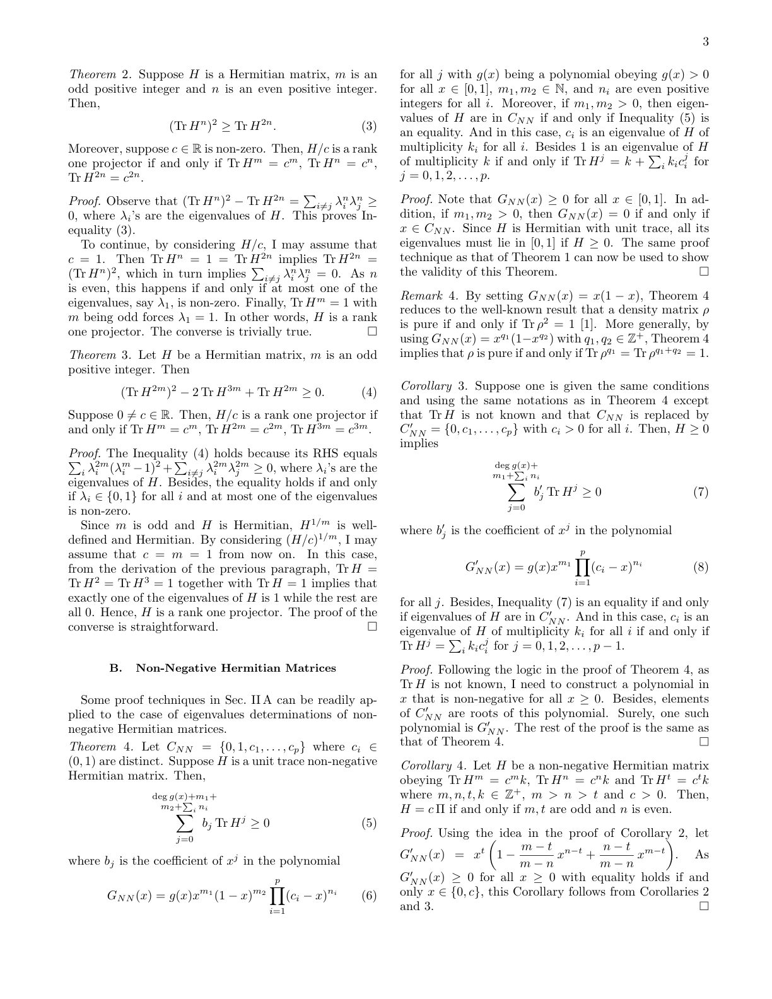
<figcaption class="paper-figure-caption"><b>Fig 2.</b> Low-resolution page preview, page 3</figcaption>
</figure>
<figure class="paper-figure-card">
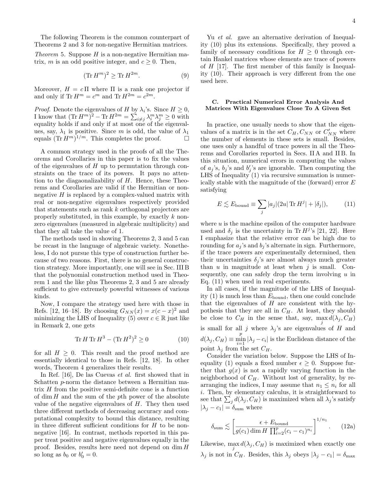
<figcaption class="paper-figure-caption"><b>Fig 3.</b> Low-resolution page preview, page 4</figcaption>
</figure>
<figure class="paper-figure-card">
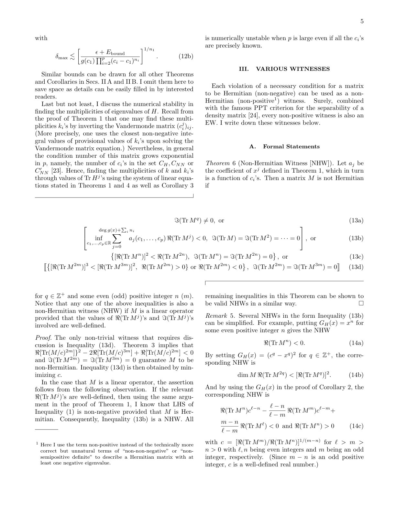
<figcaption class="paper-figure-caption"><b>Fig 4.</b> Low-resolution page preview, page 5</figcaption>
</figure>
<figure class="paper-figure-card">

<figcaption class="paper-figure-caption"><b>Fig 5.</b> Low-resolution page preview, page 6</figcaption>
</figure>
</div>

<p><strong>Summary.</strong> This paper develops a systematic framework to determine the properties of quantum states and operators by analyzing the traces of their matrix powers. It establishes that these traces can act as powerful mathematical witnesses to certify entanglement, non-positivity, and non-Hermiticity. The work is significant for quantum information theory as it provides robust, measurable diagnostic tools for characterizing quantum systems.</p>
<p><strong>Why it may be interesting.</strong> This work provides fundamental mathematical tools—the trace of powers—to diagnose complex quantum properties (like entanglement or non-Hermiticity) using only measurable quantities, which is crucial for experimental quantum information science.</p>
<details>
<summary>Detailed structure</summary>
<p><strong>Main problem.</strong> The paper systematically investigates necessary and sufficient conditions to constrain the eigenvalues of a Hermitian matrix using only the traces of its matrix powers.</p>
<p><strong>Main result.</strong> These trace constraints can serve as powerful, general witnesses to certify properties like quantum state purity, entanglement, non-positivity, and non-Hermiticity.</p>
<p><strong>Method.</strong> The authors derive polynomial constraints involving $   ext{Tr} H^j$ and develop specific witness criteria (e.g., UTNPW, EW) based on these trace identities.</p>
<p><strong>Model / system.</strong> The analysis focuses on Hermitian matrices ($H$) and density matrices ($
ho$), which are central to quantum information theory. The methods are general but are applied to diagnose quantum state properties.</p>
<p><strong>Key observables.</strong> Traces of matrix powers ($ ext{Tr} H^j$), purity ($  ext{Tr} 
ho^2$), and the values derived from various quantum witnesses.</p>
<p><strong>Important parameters / regimes.</strong> The dimension of the matrix ($D$), the number of required trace constraints ($2p+1$), and the measurement uncertainty/rounding error.</p>
<p><strong>Assumptions / limitations.</strong> The analysis addresses practical limitations, including numerical stability and measurement uncertainty, suggesting that the required accuracy for certification is very high.</p>
<p><strong>Figures summary.</strong> The notes mention tables summarizing the performance of the NPW and EW algorithms across different dimensions, showing success probabilities.</p>
<p><strong>Paper structure.</strong> The paper builds from establishing general eigenvalue constraints using traces of powers, to deriving specific witnesses (NHW, UTNPW, EW), and concluding with a systematic analysis of the strengths, weaknesses, and limitations of these certification techniques.</p>
</details>
<details>
<summary>Abstract</summary>
<p>We all know that a density matrix $ρ$ is pure if and only if $\mathrm{Tr} \,ρ^2 = 1$. But is this the only way to prove the purity of $ρ$ using the trace of its powers? Here I systematically study the necessary and sufficient conditions of the more general question of guaranteeing that all eigenvalues of a Hermitian matrix belong to a specified set through its trace of powers. More importantly, these characterization results are automatically witnesses certifying a quantum state as entangled, a Hermitian operator has least one negative eigenvalue and a linear operator as non-Hermitian. I demonstrate the effectiveness of these witnesses, analyze their performance, and study their strength, weakness together with resource requirement through numerical simulation as well as analytical work. I also discuss briefly the effects of numerical stability, uncertainty in measurement and rounding errors on these problems.</p>
</details>
<p><sub><a href="#top">↑ back to top</a></sub></p>

<p><a id="paper-2609.09352"></a></p>
<h3 id="from-the-unknown-to-the-desired-transforming-unknown-initial-states-in-the-resource-theory-of-work-and-heat"><a href="http://arxiv.org/abs/2609.09352v1">From the Unknown to the Desired: Transforming Unknown Initial States in the Resource Theory of Work and Heat</a></h3>
<p><strong>Authors:</strong> Tanmoy Biswas, Andreas Winter<br>
<strong>Type:</strong> theory · <strong>Category:</strong> statistical mechanics · <strong>PDF:</strong> <a href="https://arxiv.org/pdf/2609.09352v1">https://arxiv.org/pdf/2609.09352v1</a><br>
<strong>Analysis basis:</strong> full PDF text, analyzed in chunks
<strong>Topic relevance:</strong> <code>quantum measurements</code> <strong>2/5</strong></p>
<div class="figure-strip-hint">↔ Scroll figures horizontally</div>
<div class="paper-figures-scroll">
<figure class="paper-figure-card">

<figcaption class="paper-figure-caption"><b>Fig 1.</b> FIG. 1. Conversion of an n-copy i.i.d. state ρ⊗n into its charge– entropy normal form by a unitary V that depends only on the charge– entropy equivalence class containing ρ. The first component is max- imally mixed, with its dimension and associated charges determined solely by the entropy and average charges of ρ, whereas the second component retains the explicit dependence on ρ, with its associated charge operators depending explicitly on the total charges L×n c .</figcaption>
</figure>
<figure class="paper-figure-card">
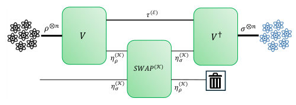
<figcaption class="paper-figure-caption"><b>Fig 2.</b> FIG. 2. Transformation of ρ⊗n into σ⊗n, where ρ and σ belong to the same charge–entropy equivalence class, assisted by a sublinear- sized ancilla. The unitary V maps ρ⊗n to the charge–entropy normal form τ(E) ⊗η(K) ρ with error at most δ(ϵn). Since the linearly supported component τ(E) is identical for states within the same charge–entropy equivalence class, the desired transformation is achieved by swap- ping η(K) ρ with an ancilla prepared in the state η(K) σ , followed by V†. The total transformation error is at most 2δ(ϵn), accounting for the errors incurred in applying V and V†.</figcaption>
</figure>
<figure class="paper-figure-card">

<figcaption class="paper-figure-caption"><b>Fig 3.</b> FIG. 3. Schematic illustration of universal thermodynamic state transformations from unknown quantum states. Given n copies of an unknown initial state ρ⊗n, one first performs a charge-preserving measurement to estimate the entropy and average charges. Once these quantities are determined, one applies a state-transformation protocol that depends only on the estimated entropy and average charges. Combining these two steps—estimation of the entropy and average charges, followed by the corresponding state-transformation protocol—yields a universal transformation protocol.</figcaption>
</figure>
<figure class="paper-figure-card">
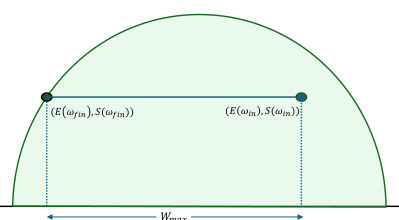
<figcaption class="paper-figure-caption"><b>Fig 4.</b> FIG. 4. Energy–entropy diagram illustrating the maximum ex- tractable work per copy from ρ. The diagram shows that, to extract the maximum amount of work from ρ, one must transform it into the Gibbs state τρ that has the same entropy as ρ and is defined with re- spect to the same Hamiltonian.</figcaption>
</figure>
</div>

<p><strong>Summary.</strong> This paper develops a universal theory for performing thermodynamic state transformations when the initial quantum state is only partially known. By constructing protocols based on the charge-entropy normal form, the authors prove that optimal work extraction can be achieved asymptotically despite the lack of full state knowledge. This advances resource-theoretic thermodynamics beyond idealized, state-aware settings.</p>
<p><strong>Why it may be interesting.</strong> This work provides a rigorous, resource-theoretic framework for thermodynamics that explicitly handles the practical limitation of incomplete knowledge about the initial state, which is crucial for realistic quantum engine designs.</p>
<details>
<summary>Detailed structure</summary>
<p><strong>Main problem.</strong> Developing a universal framework for thermodynamic state transformations (work and heat) when the initial quantum state is unknown, moving beyond state-dependent protocols.</p>
<p><strong>Main result.</strong> A universal scheme is established showing that optimal work extraction can be achieved asymptotically even when the initial state is unknown, with a super-polynomially small error.</p>
<p><strong>Method.</strong> The authors develop protocols based on the charge-entropy normal form, utilizing techniques like gentle tomography to estimate unknown state parameters while minimizing disturbance.</p>
<p><strong>Model / system.</strong> The study analyzes quantum state transformations within the resource theory of work and heat, focusing on $n$ independent and identically distributed (i.i.d.) copies of a state $
ho$ governed by mutually commuting conserved charges.</p>
<p><strong>Key observables.</strong> Von Neumann entropy $S(
ho)$ and the expectation values of conserved charges $  ext{Tr}(
ho L_i)$.</p>
<p><strong>Important parameters / regimes.</strong> The number of copies $n$, the error decay rate (super-polynomial), and the sublinear scaling of ancillary resources.</p>
<p><strong>Assumptions / limitations.</strong> The analysis assumes the existence of mutually commuting conserved charges and relies on coarse-grained measurements to estimate unknown state properties.</p>
<p><strong>Figures summary.</strong> Figure 1 illustrates the conversion of an $n$-copy state to its charge–entropy normal form. Figure 2 shows the transformation between two states using an ancilla system.</p>
<p><strong>Paper structure.</strong> The paper builds from establishing the charge-entropy normal form for states, to proving that states in the same class are asymptotically transformable, and finally detailing the protocols for estimating the necessary state parameters (entropy and charges) with minimal disturbance.</p>
</details>
<details>
<summary>Abstract</summary>
<p>We study thermodynamic state transformations in the resource theory of work and heat when the initial quantum state is unknown. Moving beyond state-dependent protocols, we develop a universal framework in which a single transformation applies to all admissible input states. For mutually commuting conserved charges, we construct charge-conserving protocols whose transformation error, quantified by trace distance, decays super-polynomially with the number of system copies. As an application, we demonstrate universal work extraction: asymptotically optimal work can be extracted without microscopic knowledge of the initial state, with a super-polynomially small error. Our results show that thermodynamic state transformations remain achievable under limited prior information and establish a universal framework for resource-theoretic thermodynamics beyond the state-aware setting.</p>
</details>
<p><sub><a href="#top">↑ back to top</a></sub></p>

<p><a id="paper-2609.10508"></a></p>
<h3 id="information-causality-characterizes-the-set-of-quantum-correlations-in-the-simplest-bell-scenario"><a href="http://arxiv.org/abs/2609.10508v1">Information Causality Characterizes the Set of Quantum Correlations in the Simplest Bell Scenario</a></h3>
<p><strong>Authors:</strong> Mariami Gachechiladze, Nikolai Miklin<br>
<strong>Type:</strong> theory · <strong>Category:</strong> quantum information and computing · <strong>PDF:</strong> <a href="https://arxiv.org/pdf/2609.10508v1">https://arxiv.org/pdf/2609.10508v1</a><br>
<strong>Analysis basis:</strong> full PDF text, analyzed in chunks
<strong>Topic relevance:</strong> <code>quantum measurements</code> <strong>2/5</strong></p>
<div class="figure-strip-hint">↔ Scroll figures horizontally</div>
<div class="paper-figures-scroll">
<figure class="paper-figure-card">
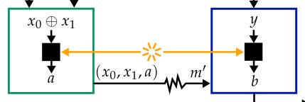
<figcaption class="paper-figure-caption"><b>Fig 1.</b> Figure 1. The scenario of information causality. Alice receives two random bits x0, x1, which may be correlated. Bob re- ceives a random bit y independent of x0 and x1. In this work, the parties communicate through a noisy channel that takes the tuple (x0, x1, a) as input and produces a bit outcome m′. The parties assist their communication with a shared non- signaling resource with binary inputs and outputs.</figcaption>
</figure>
</div>

<p><strong>Summary.</strong> This paper uses the Information Causality principle to derive a precise characterization of quantum correlations in the simplest Bell test setting, recovering the known Tsirelson-Landau-Masanes criterion. Crucially, the authors prove that generalized IC is a strictly stronger constraint than Macroscopic Locality, providing a powerful tool for bounding quantum nonlocality.</p>
<p><strong>Why it may be interesting.</strong> While focused on Bell tests, the rigorous connection between information-theoretic principles (IC) and fundamental physical constraints (like quantum nonlocality) provides a systematic theoretical framework applicable to understanding resource theories in quantum information.</p>
<details>
<summary>Detailed structure</summary>
<p><strong>Main problem.</strong> The paper investigates whether the physical principle of Information Causality (IC) is sufficient to derive the exact boundary for quantum correlations in the simplest bipartite Bell scenario, surpassing existing bounds like Uffink's inequality.</p>
<p><strong>Main result.</strong> The authors prove that the generalized IC characterizes the quantum correlations in this scenario, yielding the Tsirelson-Landau-Masanes criterion. Furthermore, they establish that generalized IC is a strictly stronger principle than Macroscopic Locality (ML).</p>
<p><strong>Method.</strong> The analysis combines the generalized IC formulation with a new communication protocol and involves taking limits (specifically, the vanishing channel capacity limit) to derive constraints on the correlators.</p>
<p><strong>Model / system.</strong> The system is the simplest bipartite Bell scenario involving two binary measurements per party (Alice and Bob) and is analyzed through the lens of information-theoretic constraints imposed by a noisy communication channel.</p>
<p><strong>Key observables.</strong> Correlators $\langle a_x b_y 
angle$, the Tsirelson-Landau-Masanes (TLM) criterion, and the generalized Information Causality (IC) constraint.</p>
<p><strong>Important parameters / regimes.</strong> The analysis heavily relies on the limit of vanishing channel capacity ($\epsilon_c 	o 0$) and the structure of the communication channel parameters.</p>
<p><strong>Assumptions / limitations.</strong> The derivation relies on specific parameterizations for the input distribution and the noisy channel, and the equivalence between the IC constraint and the TLM criterion is shown in the vanishing capacity limit.</p>
<p><strong>Figures summary.</strong> Figure 1 schematically illustrates the information causality setup with correlated inputs and a noisy channel output. The TLM criterion is presented in Equation (3).</p>
<p><strong>Paper structure.</strong> The paper first establishes that generalized IC implies the TLM criterion in the simplest Bell scenario. It then compares IC to ML, demonstrating that ML is a weaker constraint by finding correlations that satisfy ML but violate IC. The core mathematical work involves deriving the constraint from the IC inequality via limiting procedures.</p>
</details>
<details>
<summary>Abstract</summary>
<p>Information causality (IC) was introduced as a physical principle constraining correlations in non-signaling theories. Whether it can recover the exact quantum correlation boundary, beyond Uffink's inequality, has remained an open question. Here, we combine its generalized formulation for correlated inputs with a new communication protocol to derive quantum Bell inequalities that exactly characterize the quantum correlations in the simplest bipartite Bell scenario, with two binary measurements. In particular, we derive the Tsirelson-Landau-Masanes criterion directly from IC. Thus, the generalized IC implies macroscopic locality, while we also present macroscopically local correlations that violate the generalized IC. This establishes that generalized IC is a strictly stronger principle in this scenario. Together with our earlier result that generalized IC implies a nontrivial communication complexity principle, these findings strengthen the role of information causality in explaining the limits of quantum nonlocality and provide a systematic route to deriving tighter bounds on the set of quantum correlations in more general Bell scenarios.</p>
</details>
<p><sub><a href="#top">↑ back to top</a></sub></p>

<p><a id="paper-2609.09836"></a></p>
<h3 id="robust-device-independent-certification-of-boolean-phase-gates"><a href="http://arxiv.org/abs/2609.09836v1">Robust Device-Independent Certification of Boolean-Phase Gates</a></h3>
<p><strong>Authors:</strong> Yunguang Han, Xingyuan Bu, Aleksandra Gočanin, Jiabing Yuan<br>
<strong>Type:</strong> theory · <strong>Category:</strong> quantum information and computing · <strong>PDF:</strong> <a href="https://arxiv.org/pdf/2609.09836v1">https://arxiv.org/pdf/2609.09836v1</a><br>
<strong>Analysis basis:</strong> full PDF text, analyzed in chunks
<strong>Topic relevance:</strong> <code>quantum measurements</code> <strong>2/5</strong></p>
<div class="figure-strip-hint">↔ Scroll figures horizontally</div>
<div class="paper-figures-scroll">
<figure class="paper-figure-card">

<figcaption class="paper-figure-caption"><b>Fig 1.</b> FIG. 1. Boolean-derivative scoring for the ith Bell term. Party Bi measures X, while the remaining Bj parties measure Z. The latter outcomes are mapped to bits uj = (1 −zj)/2, from which the verifier evaluates the derivative sign di = (−1)∂if(u¯i). Combining this sign with the X-measurement outcome ξi gives the postprocessed output ri,1 = ξidi.</figcaption>
</figure>
<figure class="paper-figure-card">

<figcaption class="paper-figure-caption"><b>Fig 2.</b> FIG. 2. Independent-source network for gate certification. Each source Si distributes systems to the reference party Ai and to the channel input Qi. For e = 0, the Qi systems are routed directly to the Bi stations, whereas for e = 1 they pass through the physical channel E, producing output systems Ri. The route choice e is not supplied to the reference parties.</figcaption>
</figure>
<figure class="paper-figure-card">

<figcaption class="paper-figure-caption"><b>Fig 3.</b> FIG. 3. Comparison of the uniform Boolean-phase and CCZ-specific fidelity bounds in the symmetric two-route score model. The upper curves show the squared Choi-state fidelity obtained from a single state test, while the lower curves show the squared Choi fidelity of the effective channel obtained by composing the input and output certificates. Dashed curves use the uniform coefficient cZ, and solid curves use the im- proved CCZ coefficient cCCZ. The CCZ analysis lowers the nontrivial state-fidelity threshold from 0.869825 to 0.829681 and the channel-fidelity threshold from 0.934913 to 0.914840, without changing the Bell expression or measurement set- tings.</figcaption>
</figure>
</div>

<p><strong>Summary.</strong> This work presents a robust, device-independent method to certify the fidelity of Boolean-phase quantum gates. It achieves this by using a novel 'Boolean derivative' to translate gate-specific phase information into classical constraints suitable for Bell tests. This allows for the derivation of rigorous, quantifiable lower bounds on the gate's fidelity based purely on local measurement outcomes.</p>
<p><strong>Why it may be interesting.</strong> The technique of translating gate-dependent quantum information into classical constraints via the Boolean derivative is a powerful tool for device-independent characterization, applicable to any gate whose structure can be mapped to local classical measurements.</p>
<details>
<summary>Detailed structure</summary>
<p><strong>Main problem.</strong> The paper develops a robust, device-independent certification scheme for Boolean-phase gates, addressing the limitation that self-testing the output Choi state alone is insufficient.</p>
<p><strong>Main result.</strong> They derive an explicit affine lower bound on the extracted-state squared fidelity for Boolean-phase gates, and provide a closed-form Choi-fidelity bound for an effective n-qubit channel using an independent-source network.</p>
<p><strong>Method.</strong> The core method uses the Boolean derivative to convert gate-dependent phase information into classical signs, enabling the construction of a Bell test built from CHSH blocks using only local measurements.</p>
<p><strong>Model / system.</strong> The system involves certifying Boolean-phase gates, defined by arbitrary Boolean functions $f: \{0, 1\}^n 	o \{0, 1\}$, which are computational-basis diagonal gates.</p>
<p><strong>Key observables.</strong> The normalized Choi state $|\Psi_f
angle$, the Bell expression $B_f$, and the extracted-state squared fidelity $F^2$.</p>
<p><strong>Important parameters / regimes.</strong> The Bell deficit $\epsilon$, and the fidelity bound coefficients $c_Z$ and $c_{CCZ}$.</p>
<p><strong>Assumptions / limitations.</strong> The analysis assumes the ability to combine an identity test and a gate-output test in an independent-source network using the same physical observables for reference.</p>
<p><strong>Figures summary.</strong> Figure 1 illustrates the Boolean-derivative scoring for a Bell term, while Figure 2 depicts the independent-source network structure used for gate certification.</p>
<p><strong>Paper structure.</strong> The paper first introduces the problem of device-independent certification, then develops the Boolean derivative to build a classical Bell test. It extends this to an independent-source network to derive the fidelity bound, culminating in a specific joint analysis for the CCZ gate.</p>
</details>
<details>
<summary>Abstract</summary>
<p>Device-independent certification of a quantum gate requires the input and output tests to identify the same reference qubits. Self-testing the output Choi state alone does not guarantee this consistency. We develop a robust certification scheme for Boolean-phase gates, a broad family of computational-basis diagonal gates specified by Boolean functions. Boolean derivatives convert the target-dependent phase information into classical signs that can be evaluated from local measurement outcomes. This leads to Bell tests built from CHSH blocks using two binary measurements per party and no entangling measurements. At maximal violation, the tests self-test the normalized Choi state and the measured observables. Away from the maximum, they give an explicit affine lower bound on the extracted-state squared fidelity that is uniform over all Boolean functions and valid in arbitrary local dimensions. We then combine an identity test and a gate-output test in an independent-source network in which the reference devices use the same physical observables, obtaining a closed-form Choi-fidelity bound for an effective \(n\)-qubit channel. For CCZ, a joint six-party analysis gives a stronger robustness bound without changing the Bell expression or measurement settings. The construction shows how the algebraic structure of a gate can shift target-dependent information from quantum measurement design to classical processing of local outcomes.</p>
</details>
<p><sub><a href="#top">↑ back to top</a></sub></p>

<p><a id="paper-2609.09996"></a></p>
<h3 id="sim-graph-a-universal-guide-to-symmetric-interactions"><a href="http://arxiv.org/abs/2609.09996v1">SIM-GRAPH: A universal guide to symmetric interactions</a></h3>
<p><strong>Authors:</strong> R. C. Verstraten, C. Morais Smith<br>
<strong>Type:</strong> theory · <strong>Category:</strong> strongly correlated electrons · <strong>PDF:</strong> <a href="https://arxiv.org/pdf/2609.09996v1">https://arxiv.org/pdf/2609.09996v1</a><br>
<strong>Analysis basis:</strong> full PDF text, analyzed in chunks
<strong>Topic relevance:</strong> <code>analog quantum simulation</code> <strong>2/5</strong></p>
<div class="figure-strip-hint">↔ Scroll figures horizontally</div>
<div class="paper-figures-scroll">
<figure class="paper-figure-card">

<figcaption class="paper-figure-caption"><b>Fig 1.</b> FIG. 1. Graph reduction of a 3x3 square lattice with NN (links) and local (loops) interactions. The symmetry group is generated by a 90 degree rotation along site 4. The three dis- tinct symmetric representations Si are highlighted in red on the left hand side. On the right hand side, we see the reduced graph, where all interactions are projected to the symmetric subset and the other sites are removed. The remaining sites are relabeled to a counting order.</figcaption>
</figure>
<figure class="paper-figure-card">

<figcaption class="paper-figure-caption"><b>Fig 2.</b> FIG. 2. The average ground-state magnetization of the TFIM on the 3 × 3 square lattice is presented at V/Ω= 10 for both NN and VdW interactions, computed using both ED and SIM-GRAPH. For better visual comparison, the exact results are plotted using larger points, with the SIM-GRAPH results overlaid in points half the size. For both NN and VdW interactions, we find excellent agreement with only minor de- viations from the exact results.</figcaption>
</figure>
<figure class="paper-figure-card">

<figcaption class="paper-figure-caption"><b>Fig 3.</b> FIG. 3. The average ground-state magnetization of the TFIM on the 4 × 4 square lattice is presented at V/Ω= 10 for both NN and VdW interactions, computed on 50 points using both ED and SIM-GRAPH. For both NN and VdW interactions, we find deviations up to 4 spins away from the exact results. Besides the high and low ∆/Ωlimits, we find only one region of agreement at ⟨n↑⟩= 8, which corresponds to the checker- board states.</figcaption>
</figure>
<figure class="paper-figure-card">
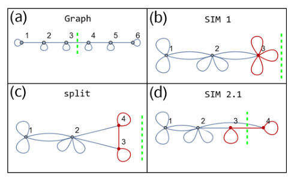
<figcaption class="paper-figure-caption"><b>Fig 4.</b> FIG. 4. (a) The NN interaction graph for a chain of 6 spins. The dashed green line indicates the symmetry axis. (b) The reduced graph based on SIM1. (c) Opening of the 3 to 4 link, which allows for a superposition across the symmetry axis. (d) The reduced graph based on SIM2.1. In (b)-(d), the red highlight indicates the difference between SIM1 and SIM2.1.</figcaption>
</figure>
<figure class="paper-figure-card">
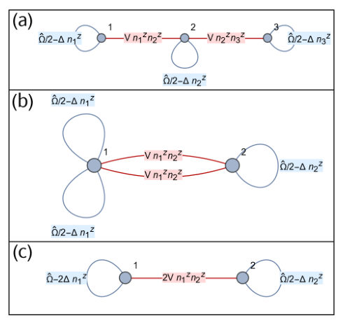
<figcaption class="paper-figure-caption"><b>Fig 5.</b> FIG. 5. The NN interaction graph for a chain of 3 spins is shown and projected according to the SIM-GRAPH proce- dure. Here, ˆΩ= ΩP</figcaption>
</figure>
</div>

<p><strong>Summary.</strong> This paper introduces SIM-GRAPH, a novel method that leverages underlying symmetries in quantum Hamiltonians to drastically reduce the computational complexity of finding ground-state properties. By projecting the system onto a symmetry-reduced graph, it achieves exponential speedups over standard exact diagonalization for models like the TFIM. This makes the study of large, complex quantum magnetic systems computationally feasible.</p>
<p><strong>Why it may be interesting.</strong> The technique provides a powerful, symmetry-based computational shortcut for strongly correlated models, offering insights into how symmetries constrain the low-energy physics of magnetic materials.</p>
<details>
<summary>Detailed structure</summary>
<p><strong>Main problem.</strong> The primary challenge is efficiently calculating ground-state observables for interacting quantum many-body systems, which typically suffer from exponential scaling when using exact diagonalization.</p>
<p><strong>Main result.</strong> The SIM-GRAPH method provides an exponential speedup by projecting interactions onto a symmetry-reduced graph, allowing for the study of large systems previously intractable.</p>
<p><strong>Method.</strong> The method uses group theory to identify symmetries, reducing the system Hamiltonian by projecting interactions onto a smaller, symmetric subset of the lattice sites, resulting in a reduced Hamiltonian.</p>
<p><strong>Model / system.</strong> The method is applied to interacting quantum spin systems, specifically using the Transverse Field Ising Model (TFIM) on various lattices, including 1D chains, 2D square lattices, and Sierpinski triangles.</p>
<p><strong>Key observables.</strong> Ground-state observables, such as average magnetization ($\langle n_{\uparrow} 
angle$) and ground-state energy.</p>
<p><strong>Important parameters / regimes.</strong> The size and geometry of the lattice (e.g., 3x3, 4x4, 1D chains); the symmetry group $S$ used for reduction.</p>
<p><strong>Assumptions / limitations.</strong> The method assumes that the ground-state observables are not significantly affected by spontaneous symmetry breaking, and that the lowest energy symmetric state is sufficient for accurate results.</p>
<p><strong>Figures summary.</strong> Figures illustrate the graph reduction process for lattices (e.g., 3x3 square lattice, 1D chain), comparing results from Exact Diagonalization (ED) against SIM-GRAPH variants ($  ext{SIM}1,  ext{SIM}2.1,    ext{SIM}2.4$) for magnetization.</p>
<p><strong>Paper structure.</strong> The paper introduces the core SIM-GRAPH technique, details its extensions (SIM2 for superpositions, SIM3 for partial symmetries), and validates its performance across various geometries (1D, 2D, Sierpinski) by comparing results against ED benchmarks.</p>
</details>
<details>
<summary>Abstract</summary>
<p>Symmetry plays a central role throughout physics, from Fourier analysis on discrete lattices to the classification of elementary particles in the standard model. In finite quantum systems, symmetries are often discrete, such as reflection and rotational symmetries. Here, we present the SIM-GRAPH method (Symmetric Ising Models - Graph Reduction And Projected Hamiltonians), which uses such symmetries to efficiently calculate ground-state observables of interacting quantum systems. By projecting all interactions onto a symmetric subset of the system, the method effectively reduces the number of sites, thus providing an exponential speedup over standard exact diagonalization. Furthermore, we introduce two extensions that broaden the applicability of the method and allow for a controlled trade-off between computational cost and accuracy.</p>
</details>
<p><sub><a href="#top">↑ back to top</a></sub></p>

<p><a id="paper-2609.09545"></a></p>
<h3 id="sub-extensive-non-stabilizerness-in-the-dyck-fredkin-spin-chain"><a href="http://arxiv.org/abs/2609.09545v1">Sub-extensive non-stabilizerness in the Dyck-Fredkin spin chain</a></h3>
<p><strong>Authors:</strong> Yasunori Lee<br>
<strong>Type:</strong> theory · <strong>Category:</strong> statistical mechanics · <strong>PDF:</strong> <a href="https://arxiv.org/pdf/2609.09545v1">https://arxiv.org/pdf/2609.09545v1</a><br>
<strong>Analysis basis:</strong> full PDF text, analyzed in chunks
<strong>Topic relevance:</strong> <code>analog quantum simulation</code> <strong>2/5</strong></p>
<div class="figure-strip-hint">↔ Scroll figures horizontally</div>
<div class="paper-figures-scroll">
<figure class="paper-figure-card">

<figcaption class="paper-figure-caption"><b>Fig 1.</b> Figure 1: An example of a Dyck path for N = 10 and the corresponding spin/qubit configuration.</figcaption>
</figure>
<figure class="paper-figure-card">

<figcaption class="paper-figure-caption"><b>Fig 2.</b> Figure 2: Stabilizer α-Rényi entropy Mα(|ψDF 0 (1)⟩) of the ground state of the (undeformed) Dyck-</figcaption>
</figure>
<figure class="paper-figure-card">

<figcaption class="paper-figure-caption"><b>Fig 3.</b> Figure 3: Stabilizer 2-Rényi entropy M2(|ψDF 0 (t)⟩) of the ground state of the deformed Dyck-</figcaption>
</figure>
</div>

<p><strong>Summary.</strong> This work analyzes the scaling of the stabilizer Rényi entropy in the Dyck-Fredkin spin chain under a deformation parameter $t$. The key finding is that the SRE displays distinct scaling laws ($\Theta(N)$, $\Theta(\log N)$, or $\Theta(1)$) depending on $t$. This suggests that non-stabilizerness is a powerful diagnostic tool capable of revealing unique signatures of quantum criticality beyond what entanglement entropy can measure.</p>
<p><strong>Why it may be interesting.</strong> The finding that SRE exhibits anomalous logarithmic scaling at $t=1$, while entanglement entropy does not, suggests that non-stabilizerness can reveal unique aspects of unconventional quantum criticality not captured by standard entanglement measures.</p>
<details>
<summary>Detailed structure</summary>
<p><strong>Main problem.</strong> The study investigates the scaling behavior of the stabilizer Rényi entropy (SRE) as a quantitative measure of non-stabilizerness in quantum many-body systems.</p>
<p><strong>Main result.</strong> The SRE exhibits distinct scaling behaviors ($\Theta(N)$, $\Theta(\log N)$, or $\Theta(1)$) depending on the deformation parameter $t$ of the Dyck-Fredkin chain, suggesting non-stabilizerness provides a unique probe for criticality.</p>
<p><strong>Method.</strong> The authors use numerical exact finite-size calculations, employing the replica formulation of the SRE, to analyze the asymptotic scaling of the ground state entropy.</p>
<p><strong>Model / system.</strong> The system analyzed is the spin-1/2 Dyck-Fredkin chain and its $t$-deformation, a local frustration-free model with unusual spectral-gap scaling.</p>
<p><strong>Key observables.</strong> Stabilizer Rényi entropy ($\alpha$-SRE), entanglement entropy, and the spectral gap ($\Delta E$).</p>
<p><strong>Important parameters / regimes.</strong> The deformation parameter $t$, which defines three distinct regimes: $t < 1$, $t = 1$, and $t > 1$.</p>
<p><strong>Assumptions / limitations.</strong> The analysis relies on the assumption that the SRE provides a physically meaningful measure of non-stabilizerness that can distinguish critical points from entanglement entropy.</p>
<p><strong>Figures summary.</strong> Figure 3 illustrates the 2-SRE scaling for the deformed chain, showing linear ($t<1$), logarithmic ($t=1$), and constant ($t>1$) behavior, contrasting with entanglement entropy scaling.</p>
<p><strong>Paper structure.</strong> The paper introduces SRE as a measure of non-stabilizerness, details the numerical methods for calculating the entropy, and then presents the core results by analyzing the scaling of SRE across the three regimes defined by the parameter $t$.</p>
</details>
<details>
<summary>Abstract</summary>
<p>The stabilizer Rényi entropy is a quantitative measure of non-stabilizerness, or magic, and has typically been found to scale extensively with system size $N$ (i.e., $Θ(N)$) for a variety of many-body quantum states. In this note, we study the stabilizer Rényi entropy of the ground state of the spin-$\frac{1}{2}$ Dyck-Fredkin chain and its $t$-deformation, a local frustration-free model with unusual spectral-gap scaling. Exploiting the combinatorial structure, we carry out numerically exact finite-size calculations, which indicate asymptotic behavior depending on $t$: $Θ(N)$ for $t<1$, $Θ(\log N)$ at $t=1$, and $Θ(1)$ for $t>1$. The scaling at $t=1$ could be another manifestation of the unconventional criticality of the model, while the contrast with the behavior of the entanglement entropy suggests that non-stabilizerness might provide a new window into quantum many-body systems.</p>
</details>
<p><sub><a href="#top">↑ back to top</a></sub></p>

<p><a id="paper-2609.10533"></a></p>
<h3 id="noether-symmetries-generate-deterministic-energy-harvesting-protocols"><a href="http://arxiv.org/abs/2609.10533v1">Noether Symmetries Generate Deterministic Energy-Harvesting Protocols</a></h3>
<p><strong>Authors:</strong> Ali Akil, M. Hamed Mohammady, Zihan Wang, Oscar Dahlsten<br>
<strong>Type:</strong> theory · <strong>Category:</strong> statistical mechanics · <strong>PDF:</strong> <a href="https://arxiv.org/pdf/2609.10533v1">https://arxiv.org/pdf/2609.10533v1</a><br>
<strong>Analysis basis:</strong> full PDF text, analyzed in chunks
<strong>Topic relevance:</strong> <code>Keldysh / 2PI / non-Gaussian methods</code> <strong>1/5</strong> · <code>Tavis-Cummings &amp; cavity-many-emitter</code> <strong>1/5</strong> · <code>analog quantum simulation</code> <strong>1/5</strong> · <code>correlated / nonlocal dissipation</code> <strong>1/5</strong> · <code>driven-dissipative phase transition</code> <strong>1/5</strong> · <code>methods for driven-dissipative</code> <strong>1/5</strong> · <code>non-equilibrium universality</code> <strong>1/5</strong> · <code>quantum measurements</code> <strong>1/5</strong></p>
<div class="figure-strip-hint">↔ Scroll figures horizontally</div>
<div class="paper-figures-scroll">
<figure class="paper-figure-card">
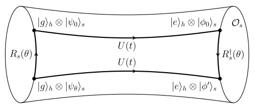
<figcaption class="paper-figure-caption"><b>Fig 1.</b> FIG. 1: Noether symmetry R generates orbits over different source states that jointly achieve DEH. The points in the figure depict source-harvester states, which undergo evolutions R or U. R = Rh ⊗Rs has two properties (i) Noether symmetry: R†UR = U, (ii) Leaves harvester energy eigenstates invariant: R |g/e⟩h |ψ⟩s = |g/e⟩h |ψ′⟩s. Suppose |ψ0⟩s achieves DEH such that U |g⟩h |ψ0⟩s = |e⟩h |ϕ⟩s. As depicted, if another ini- tial source state differs only by R, and is in that sense on the same orbit Os as |ψ0⟩s, after U being applied the harvester is also then in state |e⟩h: UR |g⟩h |ψ0⟩s = RU |g⟩h |ψ0⟩s = |e⟩h |ϕ′⟩s.</figcaption>
</figure>
<figure class="paper-figure-card">
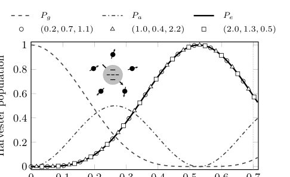
<figcaption class="paper-figure-caption"><b>Fig 2.</b> FIG. 2: Non-Abelian DEH protocol with con- served total angular momentum. A five-level har- vester is coupled to a source of five spin-1/2 particles through the interaction Hamiltonian in Eq. (14). The horizontal axis shows the dimensionless time Ωe t, where Ωe is the harvester transition frequency between |g⟩h and |e⟩h; equivalently, Ee −Eg = ℏΩe. The curves show the ground-state, auxiliary-level, and excited-state popula- tions Pg, Pa, and Pe, respectively. The solid Pe curve corresponds to the unrotated source state (α, β, γ) = (0, 0, 0), while the circles, triangles, and squares repre- sent three globally SU(2)-rotated source states with Euler angles specified in the legend. Their...</figcaption>
</figure>
<figure class="paper-figure-card">

<figcaption class="paper-figure-caption"><b>Fig 3.</b> FIG. 1. Three spin XX chain example.</figcaption>
</figure>
<figure class="paper-figure-card">
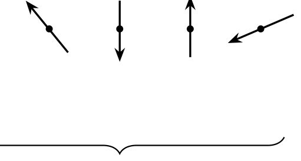
<figcaption class="paper-figure-caption"><b>Fig 4.</b> FIG. 2. Non-abelian DEH example. There is a 5 dimensional harvester and a 25-dimensional source.</figcaption>
</figure>
<figure class="paper-figure-card">
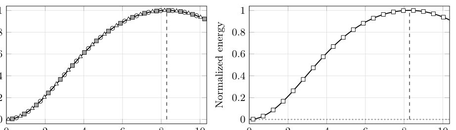
<figcaption class="paper-figure-caption"><b>Fig 5.</b> FIG. 3. Classical deterministic energy harvesting. (a) Normalized harvester energy gain for different initial phases ϕ0 of the classical source field. All phase-dependent results coincide and reach unity at the common transfer time T, indicated by the vertical dashed line. (b) Corresponding energy partitioning for a representative initial phase. The harvester energy gain equals the source energy loss, while the interaction energy remains zero along the selected seed source state trajectory.</figcaption>
</figure>
</div>

<p><strong>Summary.</strong> This theoretical paper establishes that the symmetry structure of a quantum source-harvester system dictates whether deterministic energy harvesting (DEH) is possible. By applying Noether's theorem, the authors prove that a single symmetry can generate an infinite family of source states, all of which perform the identical energy transfer. This provides a powerful, general framework for understanding energy extraction constrained by fundamental symmetries.</p>
<p><strong>Why it may be interesting.</strong> This work provides a powerful, general mathematical tool (Noether's theorem) to constrain non-equilibrium processes like energy harvesting, linking fundamental symmetries directly to thermodynamic constraints in open quantum systems.</p>
<details>
<summary>Detailed structure</summary>
<p><strong>Main problem.</strong> The paper seeks to determine the general, symmetry-based conditions under which deterministic energy harvesting (DEH) is possible in source-harvester quantum dynamics.</p>
<p><strong>Main result.</strong> The existence of a continuous Noether symmetry in the joint dynamics guarantees that an entire orbit of source states will implement the exact same deterministic energy harvesting transition.</p>
<p><strong>Method.</strong> The authors utilize Noether's theorem, extending it to generalized probabilistic theories, to link continuous symmetries (conserved Noether charges) to the realization of deterministic energy transfer.</p>
<p><strong>Model / system.</strong> The system is modeled by a composite Hamiltonian $H = H_h + H_s + H_{int}$, describing the interaction between a 'harvester' subsystem and a 'source' subsystem. Examples include Jaynes-Cummings and SU(2) models.</p>
<p><strong>Key observables.</strong> Deterministic output state ($
ho_f^h$), source asymmetry ($I$), and the conserved Noether charge ($Q_\alpha$).</p>
<p><strong>Important parameters / regimes.</strong> The symmetry generator $g$, the time evolution $    au$, and the resonance condition ($\Omega = \omega$) in the classical limit.</p>
<p><strong>Assumptions / limitations.</strong> The primary theorems assume the existence of an exact Noether symmetry for the joint dynamics and exact invariance of the harvester boundary states.</p>
<p><strong>Figures summary.</strong> Figures illustrate the generation of DEH-capable source states via symmetry orbits (Figure 1) and show population dynamics confirming the coincidence of outcomes for different symmetry-rotated source states (Figure 2).</p>
<p><strong>Paper structure.</strong> The paper builds from defining DEH and establishing the general principle using Noether's theorem (Theorem 1), providing concrete quantum examples (Jaynes-Cummings, SU(2)), generalizing the framework to classical and probabilistic theories, and finally deriving constraints on source asymmetry.</p>
</details>
<details>
<summary>Abstract</summary>
<p>We consider the general principles for when deterministic energy harvesting (DEH) is possible. DEH means absorbing energy from a fluctuating source without entropy being absorbed. We show that the symmetry structure of the source--harvester dynamics gives a general route beyond existing examples to identify DEH capable source states. Any continuous symmetry with a conserved Noether charge induces a source-side orbit of states that all implement the same deterministic harvester transition, provided the harvester boundary states are symmetry invariant. Consequently, one DEH capable source state with nonzero asymmetry between charge sectors can generate infinitely many simultaneously DEH capable source states. A Jaynes-Cummings model, a three-spin XX chain, and an SU(2) model illustrate the construction. We further extend Noether's theorem to generalised probabilistic theories and thereby generalise our main result. We further establish an asymmetry bound for harvesting, showing that source asymmetry cannot increase on average, while DEH saturates the bound exactly preserving asymmetry.</p>
</details>
<p><sub><a href="#top">↑ back to top</a></sub></p>

<p><a id="paper-2609.09741"></a></p>
<h3 id="orbital-selective-electronic-modes-induced-by-doping-and-originating-from-distinct-spin-excitations-an-essential-feature-of-orbital-selective-mott-transition"><a href="http://arxiv.org/abs/2609.09741v1">Orbital-selective electronic modes induced by doping and originating from distinct spin excitations: an essential feature of orbital-selective Mott transition</a></h3>
<p><strong>Authors:</strong> Masanori Kohno<br>
<strong>Type:</strong> theory · <strong>Category:</strong> strongly correlated electrons · <strong>PDF:</strong> <a href="https://arxiv.org/pdf/2609.09741v1">https://arxiv.org/pdf/2609.09741v1</a><br>
<strong>Analysis basis:</strong> full PDF text, analyzed in chunks
<strong>Topic relevance:</strong> <code>Keldysh / 2PI / non-Gaussian methods</code> <strong>1/5</strong> · <code>analog quantum simulation</code> <strong>1/5</strong> · <code>methods for driven-dissipative</code> <strong>1/5</strong></p>
<div class="figure-strip-hint">↔ Scroll figures horizontally</div>
<div class="paper-figures-scroll">
<figure class="paper-figure-card">

<figcaption class="paper-figure-caption"><b>Fig 1.</b> FIG. 1: Am δ=0(k, ω)t1 [(a), (d)] and Am δ=0.05(k, ω)t1 [(b), (c), (e), (f)] for the 1st orbital (m = 1) [(a)–(c)] and 2nd orbital (m = 2) [(d)–(f)]. The blue curves on the right-hand side show ρ(ω)t1 calculated from Am δ (k, ω)t1 on the left in (a), (b), (d), and (e). The dispersion relations of the doping- induced modes, ω = eS+ k−π</figcaption>
</figure>
<figure class="paper-figure-card">
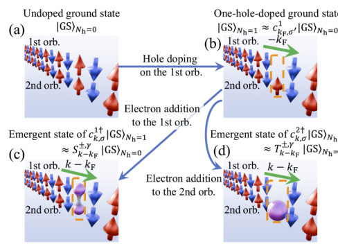
<figcaption class="paper-figure-caption"><b>Fig 2.</b> FIG. 2: Emergence mechanism of spin excited states as elec- tronic excited states upon doping. (a) Undoped ground state |GS⟩Nh=0. (b) One-hole-doped ground state |GS⟩Nh=1, which has significant overlap with the state obtained by removing an electron with Fermi momentum kF from the first orbital of |GS⟩Nh=0. The doped site is enclosed by the dashed or- ange line. (c), (d) States obtained by adding an electron with momentum k to the doped orbital [(c)] and undoped orbital [(d)] at the doped site in |GS⟩Nh=1, which have sig- nificant overlap with spin excited states S±,γ k−kF|GS⟩Nh=0 [(c)] and T ±,γ k−kF|GS⟩Nh=0 [(d)], respectively, at half filling. The states enclosed by the dashed orange...</figcaption>
</figure>
<figure class="paper-figure-card">

<figcaption class="paper-figure-caption"><b>Fig 3.</b> FIG. 3: (a) S− δ=0(k, ω)t1. (b) S+ δ=0(k, ω)t1. (c) S+ δ=0.05(k, ω)t1. (d) T − δ=0(k, ω)t1. (e) T + δ=0(k, ω)t1. (f) n1 δ=0(k) (solid orange curve) and n1 δ=0.05(k) (dashed blue curve).</figcaption>
</figure>
</div>

<p><strong>Summary.</strong> This theoretical study investigates the Orbital-Selective Mott Transition (OSMT) in a two-orbital Hubbard model by doping an antiferromagnetic insulator. Using DDMRG, the authors show that doping induces distinct electronic modes in the band gap, which are not arbitrary but originate specifically from low-energy and inter-orbital spin excitations. This provides a detailed, mechanism-based understanding of the OSMT.</p>
<p><strong>Why it may be interesting.</strong> The explicit link drawn between emergent electronic modes and underlying spin excitations provides a detailed mechanism for the OSMT, which is crucial for understanding correlated materials relevant to superconductivity and magnetism.</p>
<details>
<summary>Detailed structure</summary>
<p><strong>Main problem.</strong> The paper aims to elucidate the fundamental nature of the Orbital-Selective Mott Transition (OSMT) in correlated electron systems.</p>
<p><strong>Main result.</strong> The OSMT is characterized by the emergence of orbital-selective electronic modes in the band gap upon doping, which are directly traceable to distinct low-energy and inter-orbital spin excitations.</p>
<p><strong>Method.</strong> The study employs theoretical analysis using the Non-Abelian dynamical density-matrix renormalization group (DDMRG) method applied to the 1D Kanamori-Hubbard Model.</p>
<p><strong>Model / system.</strong> The system is modeled using the 1D two-orbital Kanamori-Hubbard Model (KHM), investigating the physics of an orbitally degenerate spin-1 antiferromagnetic insulator subjected to hole doping.</p>
<p><strong>Key observables.</strong> Spectral function ($A_m^\delta(k, \omega)$), electronic density of states ($
ho(\omega)$), and dynamical spin structure factors ($S^\pm_\delta(k, \omega)$ and $T^\pm_\delta(k, \omega)$).</p>
<p><strong>Important parameters / regimes.</strong> Doping concentration ($\delta$), and Hamiltonian parameters such as $U/t_1 = 6$, $U'/t_1 = 3.6$, $J_H/t_1 = 2.4$, and $t_2/t_1 = 0.5$.</p>
<p><strong>Assumptions / limitations.</strong> The analysis assumes the momentum and total spin of the $\delta=0$ ground state are zero, and it relies on relating emergent electronic modes to specific spin excitation channels.</p>
<p><strong>Figures summary.</strong> Figures illustrate the doping-induced electronic mode dispersion relations in the band gap, showing their overlap and origin from spin excitations ($S^\pm$ and $T^\pm$) when comparing the undoped and doped states.</p>
<p><strong>Paper structure.</strong> The paper progresses by first establishing the Mott insulating ground state ($\delta=0$), then demonstrating the emergence of orbital-selective electronic modes upon doping ($\delta>0$), and finally attributing the origin of these modes to specific spin excitation channels within the KHM framework.</p>
</details>
<details>
<summary>Abstract</summary>
<p>The nature of the orbital-selective Mott transition (OSMT) remains elusive. This study shows that, by doping an orbitally degenerate spin-1 antiferromagnetic insulator in the Kanamori-Hubbard model, electronic modes emerge in the band gap in an orbital-selective manner, exhibiting momentum-shifted spin-mode dispersion relations. Electronic modes originating from conventional spin excitations, including the low-energy one, appear in the doped orbital, while those from inter-orbital spin excitations appear in the undoped orbital. These emergent modes constitute an essential feature of the OSMT.</p>
</details>
<p><sub><a href="#top">↑ back to top</a></sub></p>

<p><a id="paper-2609.10014"></a></p>
<h3 id="effect-of-spherical-confinement-on-the-2-tips-of-soft-repulsive-spherocylinders"><a href="http://arxiv.org/abs/2609.10014v1">Effect of Spherical Confinement on the 2-TIPS of Soft Repulsive Spherocylinders</a></h3>
<p><strong>Authors:</strong> Jaydeep Mandal, Chandan Dasgupta, Prabal K. Maiti<br>
<strong>Type:</strong> theory · <strong>Category:</strong> statistical mechanics · <strong>PDF:</strong> <a href="https://arxiv.org/pdf/2609.10014v1">https://arxiv.org/pdf/2609.10014v1</a><br>
<strong>Analysis basis:</strong> full PDF text, analyzed in chunks
<strong>Topic relevance:</strong> <code>driven-dissipative phase transition</code> <strong>1/5</strong> · <code>non-equilibrium universality</code> <strong>1/5</strong></p>
<div class="figure-strip-hint">↔ Scroll figures horizontally</div>
<div class="paper-figures-scroll">
<figure class="paper-figure-card">
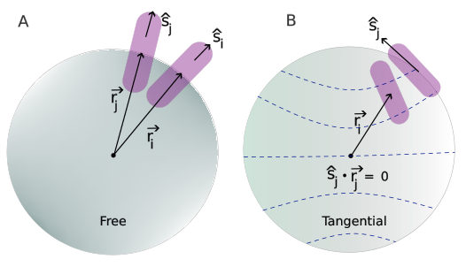
<figcaption class="paper-figure-caption"><b>Fig 1.</b> Fig. 1 A) The free anchoring of the SRS on a sphere - only the center of mass (COM) positions (⃗r) are confined on the sphere, the particles can rotate freely. B) The tangential anchoring condition - The COM positions (⃗r) are confined on the sphere, and the orientations (ˆs) are tangential on the spherical surface.</figcaption>
</figure>
<figure class="paper-figure-card">
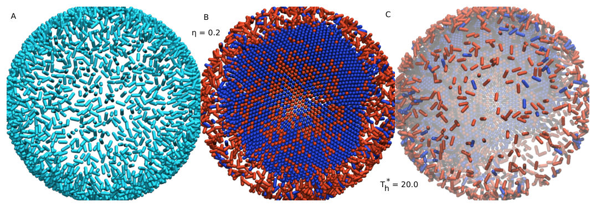
<figcaption class="paper-figure-caption"><b>Fig 2.</b> Fig. 2 Structures of the spherical monolayer of SRS: A) The initial configuration of the LC phase at a packing fraction of η = 0.2 for a system with A = 2.0,N = 2500,T ∗= 1.0. The equilibrated structure shows a small but finite orientational order even at such a low packing fraction. The particles are shown in cyan color. When 2-Temperature driven activity is introduced in the system, it shows a steady state structure of a co-existing dense (B) and dilute (C) regions. The representative snapshot is for (T ∗ c = 2.0,T ∗ h = 20.0). The hot particles are shown in red, whereas the cold ones are shown in blue. B) shows the top view, highlighting the dense cluster, which is composed of both hot...</figcaption>
</figure>
<figure class="paper-figure-card">

<figcaption class="paper-figure-caption"><b>Fig 3.</b> Fig. 3 Effect of aspect ratios on the structure of the coexisting phases in a spherical monolayer: A) The orientational defects arising in the phase- separated cold zone is shown in white. The red and blue particles indicate ‘hot’ and ‘cold’ respectively. Snapshot taken for a system of SRS with aspect ratio A = 10.0 at a packing fraction of η = 0.2. This occurrence of defect structures with long rods at lower packing fractions can be attributed to the steric strain at the tail ends of the SRSs inside the sphere. B) Similar orientational defect structures, shown in white, arise for even smaller rods (A = 5.0) at a higher packing fraction of η = 0.4. The red and blue colors indicate the ‘hot’...</figcaption>
</figure>
<figure class="paper-figure-card">
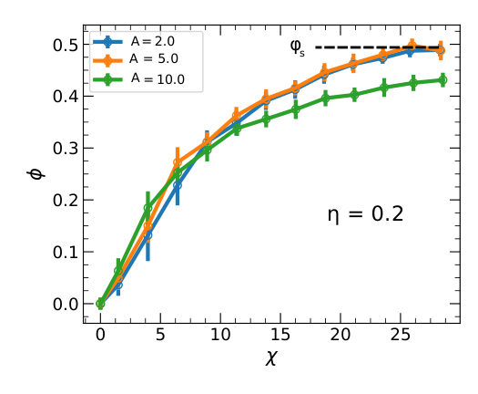
<figcaption class="paper-figure-caption"><b>Fig 4.</b> Fig. 4 Effect of aspect ratios on the phase separation in the spherical monolayer system: for a specific packing fraction η = 0.2, the phase separation order parameter φ is plotted with activity χ for different aspect ratios of the rods, A = 2.0,5.0 and 10.0. Phase separation increases with activity for all cases, but the saturation value of the order parameter (φs) reduces as the rods become longer. φs is indicated in the figure for A = 2.0.</figcaption>
</figure>
<figure class="paper-figure-card">

<figcaption class="paper-figure-caption"><b>Fig 5.</b> Fig. 5 Effect of packing fraction on the phase separation in the spherical monolayer system: The phase separation order parameter is plotted against the activity χ at different packing fractions η = 0.2,0.4, and 0.6 for A) short rods A = 2.0, B) medium rods A = 5.0 and C) long rods A = 10.0. For all the figures A) B) and C), the value at which the phase separation order parameter saturates decreases with packing fraction. This can be attributed to the enhanced trapping with packing fraction in confined systems.</figcaption>
</figure>
</div>

<p><strong>Summary.</strong> This paper investigates how temperature gradients induce phase separation in soft, rod-like particles confined to a spherical surface. By comparing free and tangential anchoring conditions, the authors show that confinement strongly dictates the phase behavior, leading to distinct dense-dilute coexisting states. The findings offer insights into active matter physics under geometric constraints.</p>
<p><strong>Why it may be interesting.</strong> The work provides a detailed study of non-equilibrium phase transitions in confined active matter, drawing parallels between 2D/spherical confinement effects and bulk active matter models, which is relevant for understanding complex many-body dynamics.</p>
<details>
<summary>Detailed structure</summary>
<p><strong>Main problem.</strong> The study investigates the 2-Temperature induced phase separation (2-TIPS) in soft repulsive spherocylinders confined to a spherical surface.</p>
<p><strong>Main result.</strong> The system exhibits phase separation into dense and dilute regions, with the degree of ordering in the dense phase being significantly influenced by the confinement geometry and the activity parameter.</p>
<p><strong>Method.</strong> The research employs Molecular Dynamics (MD) simulations within a 2-Temperature model to study active-passive mixtures.</p>
<p><strong>Model / system.</strong> The system consists of soft repulsive spherocylinders (SRS) confined either to a spherical monolayer (free anchoring) or a spherical shell (tangential anchoring). Interactions are modeled using a WCA potential, and activity is introduced via a temperature difference between two subsystems.</p>
<p><strong>Key observables.</strong> Phase separation extent ($\varphi$), local density distribution, and orientational order parameter ($\psi$).</p>
<p><strong>Important parameters / regimes.</strong> Packing fraction ($\eta$), rod aspect ratio ($A$), and the activity parameter ($\chi$ or $\Delta T$).</p>
<p><strong>Assumptions / limitations.</strong> The study assumes the applicability of the 2-Temperature model and focuses on the geometric constraints imposed by the spherical confinement.</p>
<p><strong>Figures summary.</strong> Figures illustrate the structural differences between free and tangential anchoring, showing coexisting dense/dilute clusters and the emergence of orientational defects in the phase-separated regions.</p>
<p><strong>Paper structure.</strong> The paper systematically analyzes the 2-TIPS phenomenon by comparing results from two distinct anchoring conditions (free vs. tangential) on the spherical surface, detailing how particle shape and density affect phase coexistence.</p>
</details>
<details>
<summary>Abstract</summary>
<p>We studied the 2-Temperature induced phase separation (2-TIPS) in a system of soft repulsive sphe rocylinders (SRS), confined on the surface of a sphere. We used two different anchoring conditions for the SRS on the spherical surface- free and tangential. For the free anchoring, increasing either the packing fraction or the rod aspect ratio suppresses phase separation between the active and passive subsystems, and the system corresponds to a dense-dilute phase co-existence. These phenomena can be explained via the trapping effect and are emergent due to the confinement. For the tangential anchoring, the system phase separates from its initial isotropic state into a locally ordered dense region and a disordered dilute region. Our work provides useful insights into phase separation in binary mixtures under spherical confinement.</p>
</details>
<p><sub><a href="#top">↑ back to top</a></sub></p>

<p><a id="paper-2609.10535"></a></p>
<h3 id="for-whom-does-bell-hold"><a href="http://arxiv.org/abs/2609.10535v1">For Whom Does Bell Hold?</a></h3>
<p><strong>Authors:</strong> Daniel Green, Kshitij Gupta, Qiya Zhang<br>
<strong>Type:</strong> theory · <strong>Category:</strong> other · <strong>PDF:</strong> <a href="https://arxiv.org/pdf/2609.10535v1">https://arxiv.org/pdf/2609.10535v1</a><br>
<strong>Analysis basis:</strong> full PDF text, analyzed in chunks
<strong>Topic relevance:</strong> <code>Keldysh / 2PI / non-Gaussian methods</code> <strong>1/5</strong> · <code>analog quantum simulation</code> <strong>1/5</strong></p>
<div class="figure-strip-hint">↔ Scroll figures horizontally</div>
<div class="paper-figures-scroll">
<figure class="paper-figure-card">

<figcaption class="paper-figure-caption"><b>Fig 1.</b> Figure 1: Illustration of the structural differences between quantum and classical theories. Both the quantum and classical theories have spins placed in the magnetic fields that cause spins to precess. The quantum theory (left) is placed in the ground state. The measurement of the spin in z-direction is random. When the spins are coupled via a Hamiltonian Hint, the resulting correlations are time-independent with an amplitude set by the total energy Etot = E1 +E2 +E3, where the energies Ei are the gaps between the ground state and excited state of each spin. For the classical theory (right) to produce random spins in the z direction, the spins are precessing in time with a frequency Ei and...</figcaption>
</figure>
</div>

<p><strong>Summary.</strong> This paper proposes a generalized test using statistical correlations to distinguish quantum from classical time evolution, moving beyond traditional Bell inequalities. It shows that quantum vacuum fluctuations yield unique, time-independent correlations governed by the energy gap. These quantum signatures are distinct from the time-dependent, decaying correlations predicted by classical Hamiltonian systems.</p>
<p><strong>Why it may be interesting.</strong> It provides a powerful, general theoretical tool—analyzing correlation patterns over time—to probe the quantum nature of physical processes in regimes (like cosmology) where standard non-locality tests are difficult to implement.</p>
<details>
<summary>Detailed structure</summary>
<p><strong>Main problem.</strong> The paper aims to generalize the use of statistical correlations as a Bell-type test to definitively distinguish between quantum and classical time evolution, especially in macroscopic settings where standard Bell tests fail.</p>
<p><strong>Main result.</strong> Quantum vacuum fluctuations produce unique, generally time-independent correlations controlled by the energy gap, whereas classical systems exhibit time-dependent correlations that decay via dephasing, particularly near resonant poles.</p>
<p><strong>Method.</strong> The authors compare statistical correlations derived from quantum Hamiltonian evolution versus classical Hamiltonian evolution, focusing on the behavior of correlation functions over time.</p>
<p><strong>Model / system.</strong> The analysis uses closed systems undergoing Hamiltonian evolution, comparing quantum vacuum fluctuations to classical Hamiltonian systems, often illustrated using spin precession models.</p>
<p><strong>Key observables.</strong> Statistical correlations of observables over time, energy gap ($\Delta E$), and the presence/absence of apparent poles in correlation functions.</p>
<p><strong>Important parameters / regimes.</strong> The energy gap ($\Delta E$) between ground and excited states, and the time scale over which correlations are measured.</p>
<p><strong>Assumptions / limitations.</strong> The test is designed to be model-independent, generalizing previous proposals, and it assumes the ability to measure correlations in systems where standard Bell tests are inapplicable.</p>
<p><strong>Figures summary.</strong> Figure 1 illustrates the structural difference: quantum theory shows time-independent correlations set by total energy, while classical theory shows time-dependent precession with correlations suppressed unless at resonance, where they decay via dephasing.</p>
<p><strong>Paper structure.</strong> The paper progresses by first establishing the failure of standard Bell tests in certain physical regimes, then generalizing the concept to time evolution, and finally presenting the distinct signatures of quantum vacuum fluctuations versus classical dynamics.</p>
</details>
<details>
<summary>Abstract</summary>
<p>Violations of Bell's inequalities offer a definitive signal of non-classical (quantum) behavior in local deterministic systems. Yet, in many physical settings where quantum mechanics is expected to play an important role, one cannot construct a Bell-type test using the available observables. Cosmology offers one concrete example, where cosmic structure may have originated from quantum vacuum fluctuations yet all observations are effectively classical. Nevertheless, recent work suggests that quantum and classical time evolution may still be differentiated by the pattern of statistical correlations of these observables. In this paper, we explore and generalize the use of correlations as Bell-type test of the nature of time evolution. We show that quantum vacuum fluctuations of closed systems undergoing Hamiltonian evolution produce unique correlations that are not mimicked by classical Hamiltonian systems. Correlations in the quantum vacuum are generally time-independent and are controlled by the energy gap between the ground and exited states. Classical systems exhibit apparent poles at physical frequencies that do not arise in the quantum vacuum. As one approaches the poles, the evolution becomes dominated by a resonant Hamiltonian giving rise to time dependent correlations that eventually decay through dephasing. Finally, we show that this behavior is distinct from other signals of quantum evolution, including applications to quantum optics, quantum walks, and quantum search.</p>
</details>
<p><sub><a href="#top">↑ back to top</a></sub></p>

<p><a id="paper-2609.09268"></a></p>
<h3 id="reconstructing-fluid-velocity-fields-from-sparse-sensors-using-a-variational-quantum-algorithm"><a href="http://arxiv.org/abs/2609.09268v1">Reconstructing fluid velocity fields from sparse sensors using a variational quantum algorithm</a></h3>
<p><strong>Authors:</strong> Nhat-Quang Nguyen, Mohammad Mehedi Hasan Akash, Kourosh Shoele, Yanzhu Chen, Huixuan Wu<br>
<strong>Type:</strong> theory · <strong>Category:</strong> quantum information and computing · <strong>PDF:</strong> <a href="https://arxiv.org/pdf/2609.09268v1">https://arxiv.org/pdf/2609.09268v1</a><br>
<strong>Analysis basis:</strong> full PDF text, analyzed in chunks
<strong>Topic relevance:</strong> <code>Keldysh / 2PI / non-Gaussian methods</code> <strong>1/5</strong> · <code>quantum measurements</code> <strong>1/5</strong></p>
<div class="figure-strip-hint">↔ Scroll figures horizontally</div>
<div class="paper-figures-scroll">
<figure class="paper-figure-card">
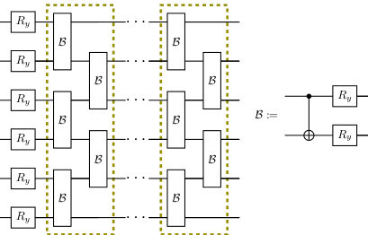
<figcaption class="paper-figure-caption"><b>Fig 1.</b> FIG. 1: The hardware-efficient ansatz with repeated layers of entangling unit circuits B arranged in a brickwall pattern. Repeating the unit circuit B more times increases the expressivity of the ansatz. All the Ry gates in the circuit are defined by parameters independent of each other. One dashed brown box is a brickwall layer.</figcaption>
</figure>
<figure class="paper-figure-card">

<figcaption class="paper-figure-caption"><b>Fig 2.</b> FIG. 2: The circuit in the top panel illustrates the effect of the index-shifting operator ˆAs. The state index of the top register is to be shifted and the bottom register with the dash-dotted wire encodes the value of the shift. For convenience, we define another operator ˆA(1) s , which is shifting the index by 1, as shown in the bottom panel.</figcaption>
</figure>
<figure class="paper-figure-card">

<figcaption class="paper-figure-caption"><b>Fig 3.</b> FIG. 4: (a) Circuit for evaluating a representative term in Eq. (15), P</figcaption>
</figure>
<figure class="paper-figure-card">
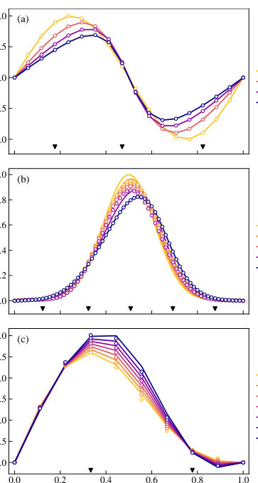
<figcaption class="paper-figure-caption"><b>Fig 4.</b> FIG. 7: Numerically simulated baseline and VQA-reconstructed velocity fields with higher space or temporal resolution for ν = 0.05. Each solid line connects the baseline velocities at different spatial coordinates for a given time. Unfilled circles are the velocities reconstructed by the proposed VQA. Panels (a) and (b) show the results for the Burgers equation with the sinusoidal (using nt + ns = 4 + 4 qubits) and Gaussian initial wave profiles (using nt + ns = 6 + 6 qubits), respectively. Panel (c) shows the results for the KS equation with nt + ns = 5 + 3 qubits.</figcaption>
</figure>
<figure class="paper-figure-card">

<figcaption class="paper-figure-caption"><b>Fig 5.</b> FIG. 6: Numerically simulated baseline and VQA-reconstructed velocity fields with viscosity ν = 0.05. Triangles on the x-axis indicate the sensor locations used for the reconstruction. Each solid line connects the baseline velocities at different spatial coordinates for a given time. Unfilled circles are the velocities reconstructed by the proposed VQA. Panels (a)(b) and (c)(d) show the results for the Burgers equation with the sinusoidal and Gaussian initial wave profiles, respectively. Panels (e) and (f) show the results for the KS equation. Panels (a), (c), and (e) are results from the real-space approach and Panels (b), (d), and (f) are results from the Galerkin-reduced-basis approach.</figcaption>
</figure>
</div>

<p><strong>Summary.</strong> This paper proposes using a variational quantum algorithm to reconstruct entire spacetime fields governed by nonlinear PDEs from only sparse sensor measurements. By encoding the full solution into a single quantum state and minimizing a cost function that enforces both the physics and the data, the authors show a compact quantum framework for solving challenging inverse problems in fluid dynamics.</p>
<p><strong>Why it may be interesting.</strong> This work directly applies quantum algorithms to solve inverse problems in classical physics (PDEs), providing a template for using quantum computation to constrain and solve complex, high-dimensional physical dynamics.</p>
<details>
<summary>Detailed structure</summary>
<p><strong>Main problem.</strong> Reconstructing complex, nonlinear physical fields, such as fluid velocity, from sparse, limited measurements.</p>
<p><strong>Main result.</strong> The authors demonstrate that a variational quantum algorithm using a spacetime encoding scheme can reconstruct globally consistent solutions for nonlinear PDEs like Burgers and KS equations with low error.</p>
<p><strong>Method.</strong> They formulate the reconstruction as a constrained optimization problem solved by minimizing a cost function combining PDE violation and measurement mismatch, encoded into a parameterized quantum circuit.</p>
<p><strong>Model / system.</strong> The system involves fluid velocity fields governed by nonlinear PDEs (e.g., Burgers, KS equations) defined over a spacetime domain. The reconstruction is performed using quantum states to encode the full solution.</p>
<p><strong>Key observables.</strong> Reconstructed velocity field $u(t, x)$; Root-Mean-Square (RMS) error.</p>
<p><strong>Important parameters / regimes.</strong> Viscosity ($
u$); Time and space discretization steps ($\Delta t, \Delta x$); Weighting hyperparameter ($w$).</p>
<p><strong>Assumptions / limitations.</strong> The solution admits a sparse representation in the accessible Hilbert space; the real-space approach uses finite-difference approximations, while the Galerkin approach assumes a sufficient basis (sine-only).</p>
<p><strong>Figures summary.</strong> Figures show reconstructed velocity fields for the Burgers and KS equations at various resolutions, demonstrating the method's ability to recover the full field profile.</p>
<p><strong>Paper structure.</strong> The paper introduces the challenge of sparse PDE reconstruction, details two VQA encoding methods (real-space and Galerkin-reduced-basis), formulates the combined cost function, and validates the approach using numerical simulations on Burgers and KS equations.</p>
</details>
<details>
<summary>Abstract</summary>
<p>Reconstructing fields governed by nonlinear partial differential equations (PDEs) from sparse measurements is a challenging task because the governing equations are strongly nonlinear and observations are available at only a few locations. Fluid velocity fields are a representative case. In this paper, we propose a variational quantum algorithm that reconstructs the solution over the entire spacetime domain at once. Rather than marching in time, the method encodes the full discrete spacetime solution in a single variational quantum state, so that all time points are optimized jointly. The cost function combines a sparse-measurement mismatch term with a physics-informed PDE violation term, letting data and the governing equation constrain the solution simultaneously. We demonstrate the method on the one-dimensional Burgers and Kuramoto--Sivashinsky equations using numerical simulations. The results suggest that variational quantum algorithms with a spacetime encoding scheme offer a compact framework for reconstructing nonlinear PDE dynamics.</p>
</details>
<p><sub><a href="#top">↑ back to top</a></sub></p>

<p><a id="paper-2609.09620"></a></p>
<h3 id="renewal-processs-guide-to-fractional-navier-stokes-equations"><a href="http://arxiv.org/abs/2609.09620v1">Renewal process's guide to fractional Navier-Stokes equations</a></h3>
<p><strong>Authors:</strong> Hong Zhang<br>
<strong>Type:</strong> theory · <strong>Category:</strong> statistical mechanics · <strong>PDF:</strong> <a href="https://arxiv.org/pdf/2609.09620v1">https://arxiv.org/pdf/2609.09620v1</a><br>
<strong>Analysis basis:</strong> full PDF text, analyzed in chunks
<strong>Topic relevance:</strong> <code>Keldysh / 2PI / non-Gaussian methods</code> <strong>1/5</strong> · <code>correlated / nonlocal dissipation</code> <strong>1/5</strong></p>
<div class="figure-strip-hint">↔ Scroll figures horizontally</div>
<div class="paper-figures-scroll">
<figure class="paper-figure-card">

<figcaption class="paper-figure-caption"><b>Fig 1.</b> Low-resolution page preview, page 2</figcaption>
</figure>
<figure class="paper-figure-card">
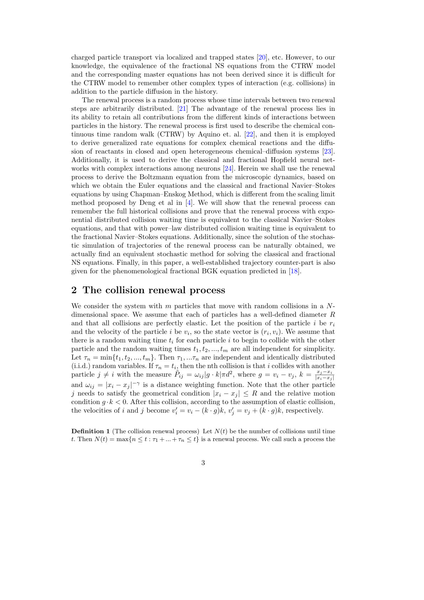
<figcaption class="paper-figure-caption"><b>Fig 2.</b> Low-resolution page preview, page 3</figcaption>
</figure>
<figure class="paper-figure-card">
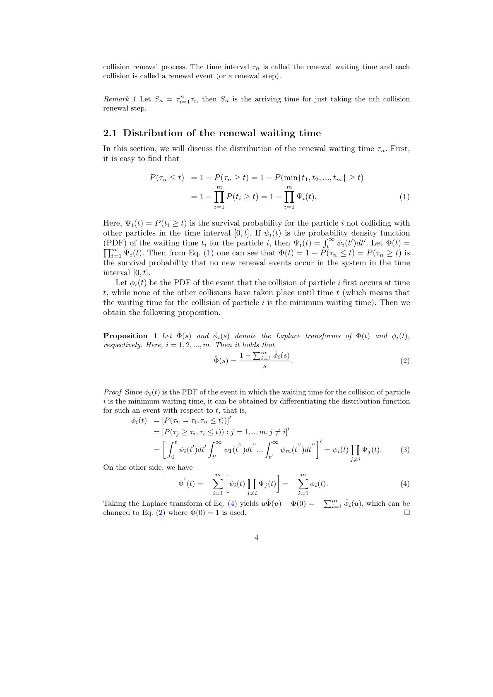
<figcaption class="paper-figure-caption"><b>Fig 3.</b> Low-resolution page preview, page 4</figcaption>
</figure>
<figure class="paper-figure-card">

<figcaption class="paper-figure-caption"><b>Fig 4.</b> Low-resolution page preview, page 5</figcaption>
</figure>
<figure class="paper-figure-card">
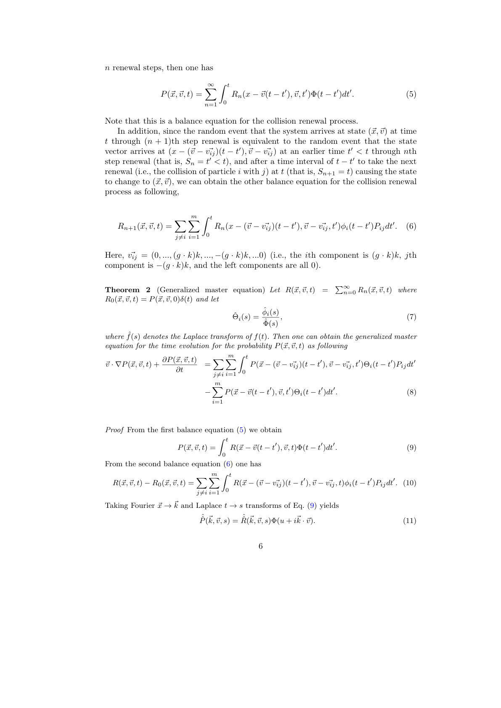
<figcaption class="paper-figure-caption"><b>Fig 5.</b> Low-resolution page preview, page 6</figcaption>
</figure>
</div>

<p><strong>Summary.</strong> This paper develops a kinetic theory approach to solve the notoriously difficult Navier-Stokes equations using a collision renewal process. By analyzing the waiting time distribution, the authors show that exponential waiting times recover classical fluid dynamics, while power-law waiting times naturally lead to the fractional Navier-Stokes equations. This provides a stochastic, simulation-friendly framework for modeling anomalous fluid transport.</p>
<p><strong>Why it may be interesting.</strong> While focused on classical fluid dynamics, the rigorous connection between stochastic processes (renewal processes) and fractional derivatives provides a powerful, non-standard toolset for modeling non-Markovian dynamics relevant in open quantum systems or complex many-body relaxation processes.</p>
<details>
<summary>Detailed structure</summary>
<p><strong>Main problem.</strong> The paper tackles the unsolved Navier-Stokes (NS) equations, a major challenge in fluid mechanics, by deriving a kinetic theory approach.</p>
<p><strong>Main result.</strong> It proves that using a collision renewal process with exponential waiting times yields the classical NS equations, while power-law waiting times lead to the fractional NS equations.</p>
<p><strong>Method.</strong> The derivation involves using the collision renewal process to establish a generalized master equation, followed by applying the Chapman-Enskog expansion method to reduce the kinetic equation to macroscopic fluid dynamics.</p>
<p><strong>Model / system.</strong> The model is the collision renewal process, which describes particle dynamics through collisions. This process is used to derive the Boltzmann equation, which then leads to both classical and fractional descriptions of fluid flow.</p>
<p><strong>Key observables.</strong> Probability distribution of the state tensor P(x, v, t); macroscopic quantities like density (rho), bulk velocity (u), and energy (E).</p>
<p><strong>Important parameters / regimes.</strong> The waiting time distribution (exponential vs. power-law) dictates whether the resulting equations are classical or fractional.</p>
<p><strong>Assumptions / limitations.</strong> Key assumptions include the use of the collision renewal process, the application of the Chapman-Enskog expansion, and assuming state independence for deriving the rate equation.</p>
<p><strong>Paper structure.</strong> The paper progresses by defining the collision renewal process, deriving the generalized master equation for the probability distribution, specializing the analysis for exponential (classical) and power-law (fractional) waiting times, and finally applying the Chapman-Enskog method to obtain the macroscopic NS equations.</p>
</details>
<details>
<summary>Abstract</summary>
<p>The Navier-Stokes equations, which remain unsolved, are crucial equations in fluid mechanics. Discovering the solutions to the Navier-Stokes equations is one of the challenging Millennium problems. In 1900, Hilbert proposed a potential approach to tackle this problem by establishing the relationship between microscopic dynamics and the macroscopic continuum equations. The key bridge is the derivation of Boltzmann equation and the theory of probability. In this paper, we shall use the collision renewal process with arbitrarily distributed waiting times to derive the Boltzmann equation for the time evolution of the probability of the velocity and the displacement of the particle, based on which we prove that the renewal process with exponential collision waiting time is equivalent to the classical Navier-Stokes equations, and that with power-law waiting time is equivalent to the fractional Navier-Stokes equations. Since the collision renewal process with arbitrarily distributed waiting times is a random process and is easy to perform the stochastic simulations of trajectories to obtain the corresponding solution, we actually find a stochastic approach to solve the classical and fractional Navier-Stokes equations.</p>
</details>
<p><sub><a href="#top">↑ back to top</a></sub></p>

<p><a id="paper-2609.09781"></a></p>
<h3 id="semi-dirac-states-and-quantum-linear-magnetoresistance-in-helimagnetic-pnictide-mnp"><a href="http://arxiv.org/abs/2609.09781v1">Semi-Dirac States and Quantum Linear Magnetoresistance in Helimagnetic Pnictide MnP</a></h3>
<p><strong>Authors:</strong> Prasanta Chowdhury, Jyotirmoy Sau, Sanat Kumar Adhikari, Sourav Chowdhury, Peter Bencok, Matthias Gutmann, Souvik Chatterjee, Saurav Giri, Manoranjan Kumar, Subham Majumdar<br>
<strong>Type:</strong> both · <strong>Category:</strong> strongly correlated electrons · <strong>PDF:</strong> <a href="https://arxiv.org/pdf/2609.09781v1">https://arxiv.org/pdf/2609.09781v1</a><br>
<strong>Analysis basis:</strong> full PDF text, analyzed in chunks
<strong>Topic relevance:</strong> <code>analog quantum simulation</code> <strong>1/5</strong> · <code>quantum measurements</code> <strong>1/5</strong></p>
<div class="figure-strip-hint">↔ Scroll figures horizontally</div>
<div class="paper-figures-scroll">
<figure class="paper-figure-card">

<figcaption class="paper-figure-caption"><b>Fig 1.</b> FIG. 1. Phase diagram. (a), (b) and (c) Shows the standard phase diagram (µ0H vs T) of MnP for field applied along [0 0 1], [1 0 0] and [0 1 0] direction with different magnetic phase marked.</figcaption>
</figure>
<figure class="paper-figure-card">
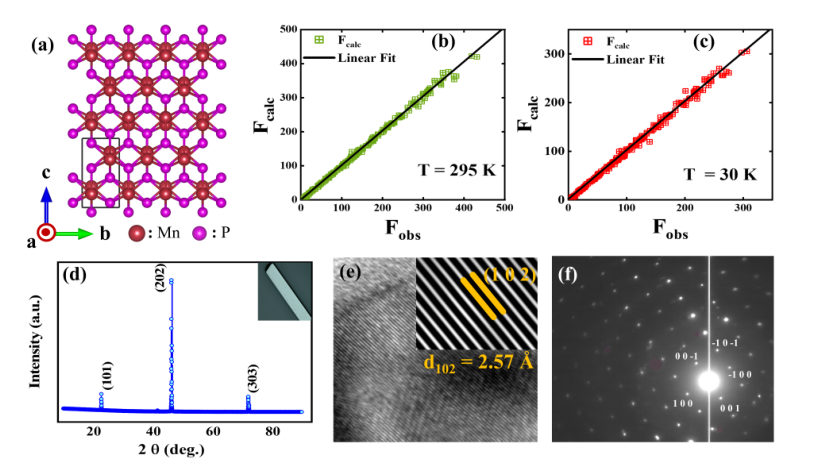
<figcaption class="paper-figure-caption"><b>Fig 2.</b> FIG. 2. Structural characterization of single-crystalline MnP. (a) Crystal structure of MnP. (b) and (c) Observed (Fobs) vs calculated (Fcalc) structure factors of SCXRD data at T = 295 K and T = 30 K respectively. (d) XRD pattern of single crystalline MnP showing (h 0 l) diffraction peaks. (e) Enlarged HRTEM image displaying (1 0 2) plane. (f) SAED pattern displaying different planes.</figcaption>
</figure>
<figure class="paper-figure-card">

<figcaption class="paper-figure-caption"><b>Fig 3.</b> FIG. 3. Magnetic properties of MnP. (a) Temperature (T) dependence of magnetization (M) in field-cooled (FC) protocols under µ0H= 0.01 T. The inset shows the temperature derivative of M(T) for µ0H ∥[1 0 1] direction. (b) M vs. T data under different fields (µ0H=0.1 T, 1 T, 3 T, 6 T) for µ0H ∥[1 0 1] direction. (c) M vs. T data in field-cooled (FC) and field-cooled-heating (FCH) protocol under µ0H= 0.01 T for µ0H ∥[0 1 0] direction and the inset shows the FC curve under µ0H= 1 T. (d) M vs. µ0H curve at 2 K for µ0H ∥[1 0 1] direction and the inset shows M vs. µ0H curve at 70 K. (e) M vs. µ0H curve at different constant T with µ0H ∥[1 0 1] direction. (f) M vs. µ0H curve at different constant T...</figcaption>
</figure>
<figure class="paper-figure-card">
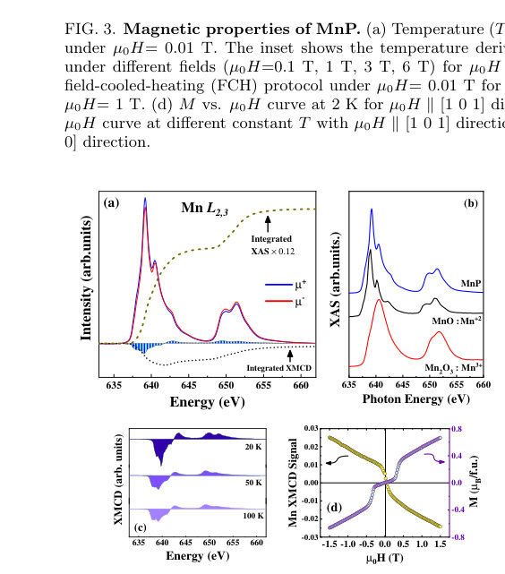
<figcaption class="paper-figure-caption"><b>Fig 4.</b> FIG. 4. XAS and XMCD of MnP. (a) Mn L2,3-edge XAS and XMCD spectra of MnP measured at 20 K with µ0H ∥ [1 0 1]. (b) Comparison of the Mn L2,3-edge XAS spectra of MnP, MnO, and Mn2O3. (c) Mn L2,3-edge XMCD spectra measured at 20, 50, and 100 K. (d) Comparison of the field dependence of the Mn L3-edge XMCD intensity (left panel) and the bulk magnetization (right panel) measured at 50 K.</figcaption>
</figure>
<figure class="paper-figure-card">

<figcaption class="paper-figure-caption"><b>Fig 5.</b> FIG. 6. Magnetoresistance of MnP. (a) Shows the MR % vs µ0H data at different constant T measured between ±15 T with different region marked. (b) Shows MR % vs µ0H data for T &gt; 50 K measured between ±5 T.</figcaption>
</figure>
</div>

<p><strong>Summary.</strong> This work investigates the magnetotransport properties of the helimagnetic material MnP, focusing on the origin of large linear positive magnetoresistance. By combining detailed experiments with first-principles calculations, the authors propose that the LPMR arises from a small Fermi pocket associated with a semi-Dirac-like band structure that is highly sensitive to the material's magnetic phase. This provides a unified, microscopic framework for understanding complex magnetotransport in topological magnets.</p>
<p><strong>Why it may be interesting.</strong> While focused on condensed matter magnetism, the interplay between magnetic order, electronic topology (semi-Dirac bands), and quantum transport phenomena is highly relevant to understanding correlated electron behavior in novel quantum materials.</p>
<details>
<summary>Detailed structure</summary>
<p><strong>Main problem.</strong> The paper investigates the origin of large linear positive magnetoresistance (LPMR) in complex, magnetically ordered topological materials.</p>
<p><strong>Main result.</strong> The LPMR is microscopically explained by a small Fermi pocket formed by a semi-Dirac-like band crossing near the Fermi level, allowing access to the quantum-limit regime.</p>
<p><strong>Method.</strong> The study combines comprehensive experimental magnetotransport measurements (Hall, MR) with first-principles electronic structure calculations.</p>
<p><strong>Model / system.</strong> The system is Manganese phosphide (MnP), a helimagnetic binary pnictide exhibiting multiple field-induced magnetic transitions (SCR, FAN, FM2).</p>
<p><strong>Key observables.</strong> Large, non-saturating LPMR (up to 800%), Anomalous/Topological Hall Effects, and the evolution of semi-Dirac-like electronic bands.</p>
<p><strong>Important parameters / regimes.</strong> Low temperatures (4 K), high magnetic fields (15 T), and the magnetic phase state (SCR, FAN, FM2).</p>
<p><strong>Assumptions / limitations.</strong> The LPMR can be framed within Abrikosov's quantum magnetoresistance theory, and the electronic structure is governed by field-induced magnetic ordering.</p>
<p><strong>Figures summary.</strong> Figures illustrate the magnetic phase diagram, structural characterization, and the temperature/field dependence of magnetization and magnetoresistance.</p>
<p><strong>Paper structure.</strong> The paper proceeds by characterizing the complex magnetic phase diagram using magnetization and structural data, followed by detailed magnetotransport measurements (Hall/MR), and finally, theoretical modeling using first-principles calculations to link the electronic structure to the observed transport anomalies.</p>
</details>
<details>
<summary>Abstract</summary>
<p>Large linear positive magnetoresistance (LPMR) in topological and magnetic materials remains a subject of intense debate, particularly in noncollinear spin systems where spin-dependent scattering complicates charge transport. Manganese phosphide (MnP), a helimagnetic binary pnictide with multiple field-induced magnetic transitions, provides a useful platform to investigate the interplay between complex magnetism and electronic topology. Here, we present a comprehensive experimental and theoretical investigation of phase-dependent magnetotransport in high-quality MnP single crystals. Hall measurements reveal an anomalous Hall effect dominated by skew scattering at high temperatures and a finite topological Hall effect in the noncollinear fan (FAN) and low-temperature screw (SCR) phases. At low temperatures, we observe a large, non-saturating LPMR reaching nearly 800 percent at 4 K and 15 T, with a pronounced linear field dependence in the field-polarized ferromagnetic (FM2) state. First-principles calculations reveal a strongly anisotropic semi-Dirac-like band at the Y point that progressively approaches the Fermi level from the SCR to FAN and FM2 states. Our analysis indicates that the resulting small Fermi pocket can access the extreme quantum-limit regime at experimentally accessible fields, providing a microscopic framework for the observed LPMR within Abrikosov's quantum magnetoresistance theory.</p>
</details>
<p><sub><a href="#top">↑ back to top</a></sub></p>

<p><a id="paper-2609.10188"></a></p>
<h3 id="topology-dependent-mixing-of-knots-in-flexible-polymer-chains"><a href="http://arxiv.org/abs/2609.10188v1">Topology-dependent mixing of knots in flexible polymer chains</a></h3>
<p><strong>Authors:</strong> Souradeep Sengupta, Garima Mishra<br>
<strong>Type:</strong> theory · <strong>Category:</strong> statistical mechanics · <strong>PDF:</strong> <a href="https://arxiv.org/pdf/2609.10188v1">https://arxiv.org/pdf/2609.10188v1</a><br>
<strong>Analysis basis:</strong> full PDF text, analyzed in chunks
<strong>Topic relevance:</strong> <code>Frenkel-Kontorova</code> <strong>1/5</strong> · <code>analog quantum simulation</code> <strong>1/5</strong></p>
<div class="figure-strip-hint">↔ Scroll figures horizontally</div>
<div class="paper-figures-scroll">
<figure class="paper-figure-card">
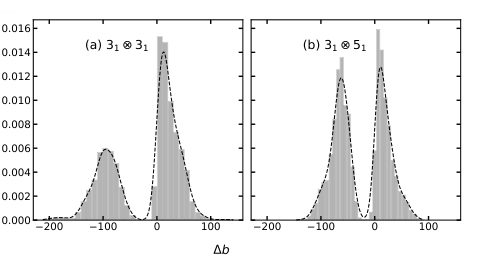
<figcaption class="paper-figure-caption"><b>Fig 1.</b> Figure 2: Probability distributions P(∆b) of the contour-based knot-separation coordinate for two knot pairs: (a) 31 ⊗31 and (b) 31 ⊗51, both initialized from partially overlapping configurations. The coordinate ∆b characterizes the relative contour organization of the localized knot regions. For classification, configurations with ∆b &lt; ∆bc are assigned to the mixed configuration, whereas those with ∆b &gt; ∆bc are assigned to the demixed configuration, where ∆bc ≃−20. Homogeneous knots (31 ⊗31) exhibit greater statistical weight in the demixed region than heterogeneous knots (31 ⊗51) at fixed normalized wall distances (x = 0.15). (The histograms are smoothed using a Gaussian kernel density...</figcaption>
</figure>
<figure class="paper-figure-card">
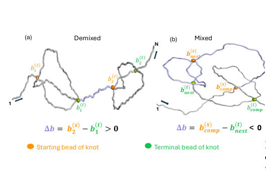
<figcaption class="paper-figure-caption"><b>Fig 2.</b> Figure 1: Schematic definition of the contour-based knot-separation coordinate ∆b. Orange and green markers denote the starting and terminal beads, respectively. (a) In a demixed configuration, the localized knot regions are separated along the polymer contour, and ∆b = b(s) 2 −b(t) 1 &gt; 0 gives the contour gap between them. (b) In a fully mixed configuration, the outer boundaries define a composite knotted region, while one constituent knot is independently localized within it. In this case, ∆b = b(s) comp −b(t) nest &lt; 0, and |∆b| provides a boundary-based measure of nesting rather than an overlap length between two independently localized constituent intervals.</figcaption>
</figure>
<figure class="paper-figure-card">
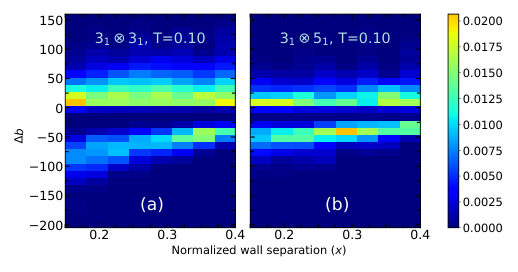
<figcaption class="paper-figure-caption"><b>Fig 3.</b> Figure 4: Color maps of the probability distributions of the contour-based knot-separation coordinate as a function of normalized wall separation x for (a) 31 ⊗31 and (b) 31 ⊗51. Positive ∆b corresponds to non-overlapping knot regions, whereas negative ∆b reflects overlap or nesting. Both systems exhibit distinct positive-∆b and negative-∆b branches whose relative statistical weights vary with normalized end separation. The 31 ⊗31 pair shows greater sampled statistical weight in the demixed branch, while the negative-∆b branch is comparatively more pronounced for 31 ⊗51 at intermediate normalized separation. In both systems, the negative-∆b branch shifts toward ∆b = 0 with increasing x,...</figcaption>
</figure>
<figure class="paper-figure-card">
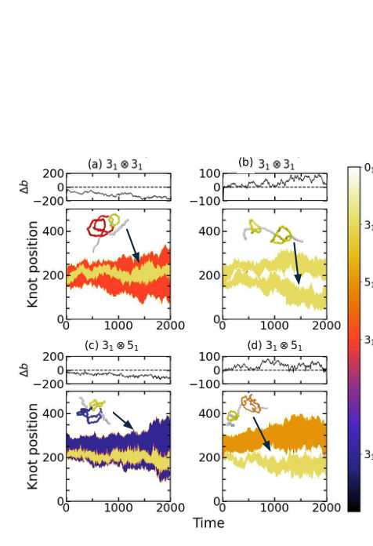
<figcaption class="paper-figure-caption"><b>Fig 4.</b> Figure 3: Representative time-evolution dynamics of a pair of knots for homogeneous 31 ⊗31 knots (top row) and heterogeneous 31 ⊗51 knots (bottom row), both initialized from partially overlapping configurations. The trajectories illustrate the evolution toward either mixed or demixed configurations: panels (a,c) illustrate trajectories that evolve toward mixed states, while panels (b,d) illustrate trajectories that evolve toward demixed states. The upper subpanel in each case shows the corresponding time evolution of the boundary-separation coordinate ∆b; ∆b &lt; ∆bc identifies mixed configuration, whereas ∆b &gt; ∆bc identifies demixed configuration. The lower subpanel shows the time evolution...</figcaption>
</figure>
<figure class="paper-figure-card">
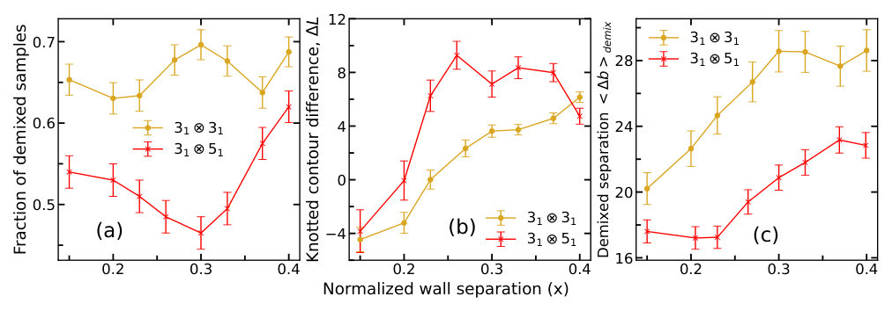
<figcaption class="paper-figure-caption"><b>Fig 5.</b> Figure 5: (a) Fraction of sampled configurations in the demixed state as a function of the normalized wall separation x for the 31 ⊗31 and 31 ⊗51 knot pairs, obtained from the corresponding P(∆b) distributions in Figure 4. (b) Contour occupancy reduction upon mixing, ∆L = L1 + L2 −Lcomp, as a function of x for the two knot pairs. The heterogeneous knot-pair exhibits a substantially larger contour-occupancy reduction than the homogeneous pair over the intermediate range of normalized end separation. (c) Average contour separation of the two localized knots within the demixed state as a function of normalized end separation x, for the homogeneous (31 ⊗31) and heterogeneous (31 ⊗51) knot...</figcaption>
</figure>
</div>

<p><strong>Summary.</strong> This work simulates the organization of multiple knots on a flexible polymer chain, comparing homogeneous and heterogeneous knot pairs. The simulations reveal that the constituent knot topology strongly dictates the system's tendency to mix or remain separated. Specifically, the heterogeneous pair exhibits enhanced mixing and a structural advantage by occupying less contour space when interpenetrated.</p>
<p><strong>Why it may be interesting.</strong> The findings provide insights into how topological constraints can mediate non-trivial collective behavior in complex polymeric systems, which has parallels in understanding entanglement or topological defects in quantum many-body systems.</p>
<details>
<summary>Detailed structure</summary>
<p><strong>Main problem.</strong> The study investigates how the inherent topology of multiple knots influences their organization (mixing vs. demixing) within a flexible polymer chain.</p>
<p><strong>Main result.</strong> Heterogeneous knot pairs ($3_1 \otimes 5_1$) show a greater tendency to mix and achieve a composite state that occupies less polymer contour than the constituent knots separatedly, compared to homogeneous pairs ($3_1 \otimes 3_1$).</p>
<p><strong>Method.</strong> Coarse-grained Brownian-dynamics simulations are employed to track the time evolution and probability distribution of the knot configuration.</p>
<p><strong>Model / system.</strong> The system is a flexible polymer chain confined between two opposing walls, modeled using a potential energy function including bond, excluded volume (WCA), and wall potentials.</p>
<p><strong>Key observables.</strong> Relative frequency of mixed vs. demixed configurations, contour occupancy reduction upon mixing ($\Delta L$), and the boundary-based knot-separation coordinate ($\Delta b$).</p>
<p><strong>Important parameters / regimes.</strong> Normalized wall separation ($x = d/L$) and the specific topologies of the constituent knots ($3_1$ and $5_1$).</p>
<p><strong>Assumptions / limitations.</strong> The analysis relies on coarse-grained dynamics and uses a boundary-based metric ($\Delta b$) to classify topological states, which is assumed to be robust.</p>
<p><strong>Figures summary.</strong> Figures illustrate probability distributions of the knot separation coordinate ($\Delta b$) versus wall separation ($x$), and show how the contour occupancy reduction ($\Delta L$) differs between the two knot pairs.</p>
<p><strong>Paper structure.</strong> The paper systematically compares the statistical sampling of mixed versus demixed states for two knot pairs ($3_1 \otimes 3_1$ vs. $3_1 \otimes 5_1$) across varying wall separations, focusing on the structural consequences of mixing.</p>
</details>
<details>
<summary>Abstract</summary>
<p>The organization of multiple knots along a polymer contour can depend sensitively on the topology of the constituent knots. Using coarse-grained Brownian-dynamics simulations, we investigate topology-dependent mixing of two knots in a flexible polymer at controlled normalized wall separation. We compare homogeneous ($3_1\otimes 3_1$) and heterogeneous ($3_1\otimes 5_1$) knot pairs using a contour-based coordinate that distinguishes mixed and demixed configurations. Starting from partially overlapping configurations, the $3_1\otimes 5_1$ pair is observed in mixed configurations more frequently over the simulation time window than the $3_1\otimes 3_1$ pair at intermediate wall separation. We further find that, over the intermediate range of normalized wall separation, mixing of the $3_1\otimes5_1$ pair produces a composite knotted region that occupies substantially less polymer contour than the two constituent knots collectively occupy in demixed configurations. The corresponding reduction in contour occupancy is much smaller for the $3_1\otimes3_1$ pair. This indicates that the heterogeneous constituent topologies can be accommodated within a smaller portion of the polymer contour in the composite configuration. These results establish that constituent topology can strongly influence multiple-knot organization in flexible polymers.</p>
</details>
<p><sub><a href="#top">↑ back to top</a></sub></p>

<p><a id="paper-2609.09615"></a></p>
<h3 id="eight-unit-cell-electronic-modulations-in-cuprates-originating-from-local-molecular-orbitals"><a href="http://arxiv.org/abs/2609.09615v1">Eight-unit-cell electronic modulations in cuprates originating from local molecular orbitals</a></h3>
<p><strong>Authors:</strong> Zhiheng Yao, Sixuan Chen, Jianfa Zhao, Shusen Ye, Weixiang Qu, Ning Xia, Yuling Dai, Luchuan Shi, Hongrui Zhang, Zhenqi Hao, Changqing Jin, Shuo Yang, Yayu Wang<br>
<strong>Type:</strong> both · <strong>Category:</strong> strongly correlated electrons · <strong>PDF:</strong> <a href="https://arxiv.org/pdf/2609.09615v1">https://arxiv.org/pdf/2609.09615v1</a><br>
<strong>Analysis basis:</strong> full PDF text, analyzed in chunks
<strong>Topic relevance:</strong> <code>Frenkel-Kontorova</code> <strong>1/5</strong></p>
<div class="figure-strip-hint">↔ Scroll figures horizontally</div>
<div class="paper-figures-scroll">
<figure class="paper-figure-card">

<figcaption class="paper-figure-caption"><b>Fig 1.</b> FIG. 1. Eight-unit-cell modulation in the superconducting p = 0.10 sample. (a) Large-scale topographic image of the p = 0.10 sample acquired at T = 5 K. (b) Spatially averaged dI/dV spectrum showing the superconducting gap and pseudogap. The inset is the -d3I/dV3 curve from -40 mV to 40 mV, where the superconducting gap can be clearly resolved. (c) to (d) dI/dV maps at bias Vb = 10 mV and 150 mV. (e) to (f) FT maps of (c)-(d) , revealing peaks at q ≈ 1/4 and q ≈ 1/8. (g) Line profiles along the Bragg directions in (e)-(f), highlighting both wavevectors. (h) Zoomed-in region of the red square in (c) and (d). (i) to (j) dI/dV spectra and color plot along the magenta arrow in (h), showing...</figcaption>
</figure>
<figure class="paper-figure-card">

<figcaption class="paper-figure-caption"><b>Fig 2.</b> FIG. 2. Eight-unit-cell modulation in the underdoped p = 0.05 sample. (a) to (b) dI/dV maps on the p = 0.05 sample at bias Vb = 30 and 200 mV acquired at T = 5 K, revealing the formation of molecular orbitals with energy-dependent internal structures. The region of red square highlights chain-like assemblies of 4a0 plaquettes separated by intervals of approximately 4a0. (c) to (d) dI/dV spectra and corresponding color plot along the red arrow, exhibiting an 8a0 modulation over three periods. (e) dI/dV map at bias Vb = 30 mV for another FOV with unidirectional 8a0 modulation. (f) FT map (inset) of (e) and its line profiles along the Bragg peaks. (g) The magenta linecut revealing the...</figcaption>
</figure>
<figure class="paper-figure-card">

<figcaption class="paper-figure-caption"><b>Fig 3.</b> FIG. 3. Emergence of 4a0 plaquette and 8a0 modulation in the p = 0.03 sample. (a) Topographic image of p = 0.03 sample acquired at T = 23 K. (b) dI/dV map at bias Vb = 25 mV, showing the formation of almost isolated plaquettes and short chains. (c) Linecut along the magenta arrow in (b), revealing the formation of 4a0 plaquette. (d) to (e) Similar dataset as (a)-(b) at another FOV of the same sample with slightly higher local dopant concentration. (f) Linecut along the red arrow in (e), revealing the emergence of 8a0 modulation and the internal stripes of the 4a0 plaquettes.</figcaption>
</figure>
<figure class="paper-figure-card">

<figcaption class="paper-figure-caption"><b>Fig 4.</b> FIG. 4. Monte Carlo simulation illustrating the emergence of 8a0 modulations from the self- organization of 4a0 molecular orbitals. (a) Impurity potential generated by randomly distributed dopants for p = 0.05. (b) Representative low-temperature configurations of 4a0 plaquettes, showing the formation of plaquette chains. (c) The line profiles along the corresponding FT (inset), revealing the dominant 4a0 periodicity and the accompanying 8a0 modulation. (d) to (f) The same set of results as in (a)-(c) for p = 0.10. The plaquette chains become longer because of the increased coverage of molecular orbitals. Both the 4a0 and 8a0 periodicities are clearly observed.</figcaption>
</figure>
</div>

<p><strong>Summary.</strong> This research uses STM and theoretical modeling to argue that the prominent eight-unit-cell electronic modulation in cuprates is not a conventional pair density wave, but rather a spatial subharmonic. This modulation arises from the self-assembly of local electronic states into fundamental four-unit-cell plaquettes, establishing the plaquette as the primary electronic building block.</p>
<p><strong>Why it may be interesting.</strong> The work provides a concrete, real-space mechanism (molecular orbital self-organization) to explain a key feature of high-Tc superconductivity, offering a potential alternative to purely momentum-space descriptions of pairing order.</p>
<details>
<summary>Detailed structure</summary>
<p><strong>Main problem.</strong> The paper investigates the nature and origin of the eight-unit-cell (8a0) electronic modulation observed in cuprate superconductors, challenging the conventional view of the pair density wave (PDW).</p>
<p><strong>Main result.</strong> The 8a0 modulation is proposed to be a spatial subharmonic arising from the self-organization of local molecular orbitals, which are fundamentally built from $4a_0 	imes 4a_0$ plaquettes, rather than a simple finite-momentum pairing instability.</p>
<p><strong>Method.</strong> The study combines spectroscopic imaging scanning tunneling microscopy (STM) experiments with theoretical modeling using Markov Chain Monte Carlo (MCMC) simulations.</p>
<p><strong>Model / system.</strong> The system is hole-doped cuprates ($    ext{Ca}_2   ext{CuO}_2  ext{Cl}_2$), modeled using a statistical framework where the elementary degree of freedom is the $4a_0$ plaquette, governed by interaction energies between nearest-neighbor plaquettes.</p>
<p><strong>Key observables.</strong> Spatial modulations with $8a_0$ periodicity, $4a_0$ plaquettes, and the correlation between these modulations and internal stripe patterns.</p>
<p><strong>Important parameters / regimes.</strong> Doping levels ($p=0.03, p=0.05, p=0.10$), temperature ($T$), and interaction parameters ($g_\alpha, g_eta, W$).</p>
<p><strong>Assumptions / limitations.</strong> The $4a_0$ plaquette is the fundamental electronic building block, and the $8a_0$ modulation originates from the depletion regions separating these plaquettes.</p>
<p><strong>Figures summary.</strong> Figures show STM $ ext{d}I/    ext{d}V$ maps and Fourier transform analyses confirming $4a_0$ and $8a_0$ modulations in both superconducting and insulating regimes, alongside MCMC simulations reproducing these periodicity peaks.</p>
<p><strong>Paper structure.</strong> The paper progresses from experimental observation of $8a_0$ modulations in STM to proposing the $4a_0$ plaquette as the basic unit, and finally developing and testing a statistical model (MCMC) to confirm that the $8a_0$ periodicity is a geometric consequence of the plaquette arrangement.</p>
</details>
<details>
<summary>Abstract</summary>
<p>The pair density wave (PDW) state with eight-unit-cell (8a0) periodicity has been widely regarded as the primary order in cuprates, yet its existence and origin remain subjects of intense debate. Using spectroscopic imaging scanning tunneling microscopy, we observe spatial modulations of the electronic states with approximately 8a0 periodicity in both the superconducting and insulating regimes of hole-doped Ca2CuO2Cl2 cuprate. We find that the 8a0 spatial patterns are generated by the formation of molecular orbitals by doped holes, which organize into 4a0*4a0 plaquettes as the basic unit. Our results identify the 4a0 molecular orbital as the fundamental electronic building block in cuprates, while the 8a0 PDW represents a spatial subharmonic that emerges at sufficiently high doping.</p>
</details>
<p><sub><a href="#top">↑ back to top</a></sub></p>

<p><a id="paper-2609.09317"></a></p>
<h3 id="fermionic-quantum-cellular-automata-in-2d-are-trivial"><a href="http://arxiv.org/abs/2609.09317v1">Fermionic quantum cellular automata in 2d are trivial</a></h3>
<p><strong>Authors:</strong> Jeffrey Kwan, David M. Long, Jeongwan Haah<br>
<strong>Type:</strong> theory · <strong>Category:</strong> strongly correlated electrons · <strong>PDF:</strong> <a href="https://arxiv.org/pdf/2609.09317v1">https://arxiv.org/pdf/2609.09317v1</a><br>
<strong>Analysis basis:</strong> full PDF text, analyzed in chunks
<strong>Topic relevance:</strong> <code>analog quantum simulation</code> <strong>1/5</strong></p>
<div class="figure-strip-hint">↔ Scroll figures horizontally</div>
<div class="paper-figures-scroll">
<figure class="paper-figure-card">

<figcaption class="paper-figure-caption"><b>Fig 1.</b> Figure 1. Immersion of the punctured 2-torus in R2.</figcaption>
</figure>
<figure class="paper-figure-card">

<figcaption class="paper-figure-caption"><b>Fig 2.</b> Figure 2. Copies of [0, 1000ℓ] × [0, 1000ℓ] tiling the plane.</figcaption>
</figure>
<figure class="paper-figure-card">

<figcaption class="paper-figure-caption"><b>Fig 3.</b> Figure 3. Ancilla (fermion) removal. Any finite depth circuit of local automor- phisms can be rewritten with 4k layers U1, U2, . . . , U4k, where each Uj is a circuit supported on the union Rj of far separated regions (strips in 2d). Each Rj takes up a fraction at most 1/k of all sites. Any (fermionic) ancilla used by layer ja with ja ∈[1, k] can be borrowed from a nearby ancilla in R2k+1 ∪· · · ∪R3k and immediately returned. Each layer just needs O(1) strips to borrow ancillas from, but we give a big enough pool of ancillas by taking k large. The ancillas used by layers jb ∈[k + 1, 2k] are borrowed from R3k+1 ∪· · · ∪R4k; those used by layers jc ∈[2k + 1, 3k] are from R1 ∪· · · ∪Rk;...</figcaption>
</figure>
<figure class="paper-figure-card">

<figcaption class="paper-figure-caption"><b>Fig 4.</b> Figure 4. Blending QCA γ from α on the left with a trivial Brauer boundary algebra B into bilayer shift QCA β = β1 ⊗β2 on the right. The construction is transcription of the following line of thought. The green squares are mapped according to ϕ onto the fermionic commutant A of B, where ϕ is provided by the Brauer triviality. Then, ϕ take up a part of the codomain so any other potential image must live elsewhere. In particular, the on-site algebras at x = n, n + 1 must map out of that region, so we send them out to the right. This incurs cascading surplus and deficit of local algebras, leading to a chain of local shifts, resulting in β1 and β2.</figcaption>
</figure>
<figure class="paper-figure-card">
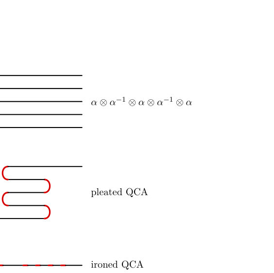
<figcaption class="paper-figure-caption"><b>Fig 5.</b> Figure 5. The pleating and ironing construction used in 6.10. Any QCA α is equivalent to α ⊗(α−1 ⊗α)⊗n (top panel with n = 2 layers). By removing local automorphisms in the circuit for α ⊗α−1 or α−1 ⊗α, adjacent pairs of layers can be blended to the identity in alternating ways, creating a pleating of α [34]. The red segments indicate positions where the action of the pleated QCA differs from a tensor product of α or α−1. This pleating can then be flattened and compressed (or ironed out), simply by rearranging local algebras in space. The result is a QCA β ◦(α ⊗id), where β is a circuit, such that β ◦(α ⊗id) has a reduced spread along the direction of the pleat.</figcaption>
</figure>
</div>

<p><strong>Summary.</strong> This theoretical paper proves that fermionic Quantum Cellular Automata (QCA) in two dimensions are mathematically trivial. The authors achieve this by employing sophisticated algebraic tools related to fermionic superalgebras and an inductive geometric process involving 'hemming' and 'pleating.' The result significantly constrains the possible dynamics that can be modeled by local fermionic interactions in 2D lattices.</p>
<p><strong>Why it may be interesting.</strong> This work provides a deep structural classification of quantum dynamics (automorphisms) on fermionic systems, which is crucial for understanding the limitations and symmetries of quantum computation models based on local interactions.</p>
<details>
<summary>Detailed structure</summary>
<p><strong>Main problem.</strong> The paper aims to prove that fermionic Quantum Cellular Automata (QCA) in two dimensions are mathematically trivial.</p>
<p><strong>Main result.</strong> Every 2-dimensional fermionic QCA on a locally finite-dimensional algebra is shown to be a composition of local automorphisms and a simple fermionic shift.</p>
<p><strong>Method.</strong> The proof utilizes advanced algebraic techniques, specifically establishing that certain fermionic invertible subalgebras in 1D lattices are 'Brauer trivial,' which then leads to the classification of the 2D QCA.</p>
<p><strong>Model / system.</strong> The system modeled is the fermionic Quantum Cellular Automaton (QCA), which is defined as a $*$-automorphism of local fermionic operator algebras ($\mathbb{Z}_2$-graded superalgebras) possessing bounded spread.</p>
<p><strong>Key observables.</strong> The primary observables are the algebraic structure (e.g., $\mathbb{Z}_2$-grading, spectral nondegeneracy) and the geometric property of 'spread' (locality) of the automorphism.</p>
<p><strong>Important parameters / regimes.</strong> Dimensionality (focus on 2D), the size of the initial 'hole' ($r_0$), and the spread ($\ell$) of the QCA.</p>
<p><strong>Assumptions / limitations.</strong> The analysis relies on the assumption of spectral nondegeneracy for the underlying fermionic algebras and requires the initial hole radius to be sufficiently large relative to the spread.</p>
<p><strong>Figures summary.</strong> Figure 7 illustrates the inductive process of expanding a QCA with a hole using operations like hemming, pleating, and ironing to simplify the structure.</p>
<p><strong>Paper structure.</strong> The paper builds mathematically by first developing the algebraic machinery for fermionic algebras (spectral nondegeneracy, fermionic commutators), then applying this to finite-dimensional algebras, and finally using an inductive process involving geometric operations (hemming, pleating, ironing) to prove the triviality of the 2D QCA.</p>
</details>
<details>
<summary>Abstract</summary>
<p>Fermionic quantum cellular automata (QCA) are automorphisms of local fermionic operator algebras ($\mathbb Z_2$-graded superalgebras) that have bounded spread: they map local operators to nearby operators. We prove that every 2-dimensional fermionic QCA on a locally finite-dimensional algebra is a composition of local automorphisms and a fermionic shift. This is implied by our result that every locally finite-dimensional fermionic invertible subalgebra in a one-dimensional lattice is Brauer trivial, \textit{i.e.}, it is stably bounded-spread isomorphic to a tensor product fermionic algebra.</p>
</details>
<p><sub><a href="#top">↑ back to top</a></sub></p>

<p><a id="paper-2609.09426"></a></p>
<h3 id="josephson-energy-of-superconducting-junctions-amorphous-versus-crystalline-tunnel-barriers"><a href="http://arxiv.org/abs/2609.09426v1">Josephson energy of superconducting junctions: amorphous versus crystalline tunnel barriers</a></h3>
<p><strong>Authors:</strong> Wanting Zhang, Aldilene Saraiva-Souza, Félix Beaudoin, Xianghua Kong, Hong Guo, Yu Zhu<br>
<strong>Type:</strong> theory · <strong>Category:</strong> quantum information and computing · <strong>PDF:</strong> <a href="https://arxiv.org/pdf/2609.09426v1">https://arxiv.org/pdf/2609.09426v1</a><br>
<strong>Analysis basis:</strong> full PDF text, analyzed in chunks
<strong>Topic relevance:</strong> <code>Keldysh / 2PI / non-Gaussian methods</code> <strong>1/5</strong></p>
<div class="figure-strip-hint">↔ Scroll figures horizontally</div>
<div class="paper-figures-scroll">
<figure class="paper-figure-card">

<figcaption class="paper-figure-caption"><b>Fig 1.</b> Figure 1: Atomic structures of the Josephson-junction models. (a) Junction with a crystalline Al2O3 tunnel barrier. (b) Junction with an amorphous Al2O3 tunnel barrier of the same oxide thickness. Blue and red spheres represent Al and O atoms, respectively.</figcaption>
</figure>
<figure class="paper-figure-card">
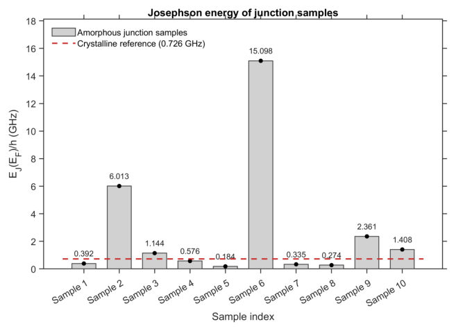
<figcaption class="paper-figure-caption"><b>Fig 2.</b> Figure 2: Josephson energies of the ten amorphous junction samples (bars), estimated from the calculated Fermi-level transmission using the Ambegaokar–Baratoff relation with ∆= 0.18 meV and a device area of 200 × 200 nm2. Each junction is scaled using its corresponding transverse simulation-cell area A0. The dashed line marks the crystalline reference junction (EJ/h ≈0.73 GHz).</figcaption>
</figure>
<figure class="paper-figure-card">
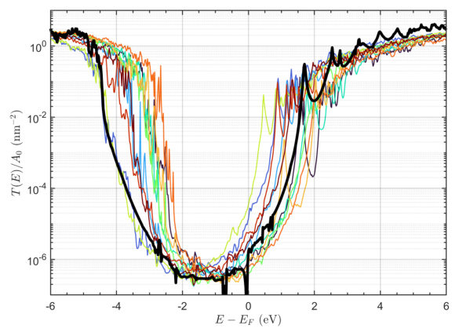
<figcaption class="paper-figure-caption"><b>Fig 3.</b> Figure 3: Area-normalized energy-dependent transmission T(E)/A0 on a logarithmic scale, where A0 is the transverse area of the corresponding simulation cell. The thick black curve is the crystalline junction; the colored curves are the ten amorphous junctions. Normalization by A0 accounts for the different transverse supercell areas of the crystalline and amorphous models. All curves exhibit a similar transmission-valley structure, while their values near the Fermi level vary substantially among samples.</figcaption>
</figure>
<figure class="paper-figure-card">

<figcaption class="paper-figure-caption"><b>Fig 4.</b> Figure 4: Probability of the Fermi-level scattering states (natural-log scale), averaged over the transverse xy dimensions, for all 64 transport channels in each of the ten amorphous junction samples. The panels correspond to Samples 1–10, and the color denotes the transport-channel index. The approximately linear decay within the oxide on the logarithmic scale is characteristic of quantum tunneling; the different decay rates show that some channels are considerably more conductive than others.</figcaption>
</figure>
<figure class="paper-figure-card">

<figcaption class="paper-figure-caption"><b>Fig 5.</b> Figure 5 visualizes two representative scattering states in real space: (a) the least conductive channel of Sample 5, the lowest-transmission junction, and (b) the most conductive channel of Sample 6, the highest-transmission junction. In the least conductive case, the wave function remains confined to the incident electrode and interface region and dies out inside the oxide; in the most conductive case, it penetrates the barrier and retains substantial amplitude on the transmitted side. These observations suggest the following physical picture. Amorphous Al2O3 has a spatially nonuniform stoichiometry: Al-rich regions have a lower effective tunnel-barrier height, while O-rich regions have a...</figcaption>
</figure>
</div>

<p><strong>Summary.</strong> This theoretical study quantifies the Josephson energy in superconducting junctions by comparing crystalline and amorphous oxide barriers. Using NEGF-DFT, the authors find that amorphous barriers show high variability and a higher mean $E_J$ due to percolation pathways. This work provides a crucial atomistic understanding of how oxide disorder dictates superconducting circuit performance.</p>
<p><strong>Why it may be interesting.</strong> The direct link established between the nanoscale, disordered microstructure (amorphous oxide) and a macroscopic circuit parameter ($E_J$) is highly relevant for designing reliable quantum hardware.</p>
<details>
<summary>Detailed structure</summary>
<p><strong>Main problem.</strong> The paper investigates how the atomic structure of the tunnel barrier affects the Josephson energy ($E_J$) in superconducting junctions, a critical parameter for transmon qubits.</p>
<p><strong>Main result.</strong> Amorphous barriers exhibit a significantly higher mean $E_J$ compared to crystalline barriers, with variability arising from percolation-like tunneling paths due to stoichiometric inhomogeneity.</p>
<p><strong>Method.</strong> The Josephson energy is calculated using first-principles quantum transport modeling based on the NEGF-DFT method, combined with the Ambegaokar–Baratoff relation.</p>
<p><strong>Model / system.</strong> The system is an Al/AlOx/Al Josephson junction, modeled using the Hamiltonian relevant to transmon qubits. The comparison is made between a perfectly crystalline $ ext{Al}_2   ext{O}_3$ barrier and multiple realizations of melt-quenched amorphous $    ext{Al}_2   ext{O}_3$ barriers.</p>
<p><strong>Key observables.</strong> Josephson energy ($E_J$), normal-state conductance ($G_{A/N}$), and the transmission coefficient $T(E)$.</p>
<p><strong>Important parameters / regimes.</strong> The superconducting gap ($\Delta$), the junction area ($200 	imes 200 	ext{ nm}^2$), and the ratio $E_J/h$.</p>
<p><strong>Assumptions / limitations.</strong> The analysis assumes that the superconducting properties are governed by the Ambegaokar–Baratoff relation and that the transport mechanism is quantum tunneling.</p>
<p><strong>Figures summary.</strong> Figures compare the atomic structures of crystalline versus amorphous barriers, show the calculated $E_J$ values for multiple amorphous samples against the crystalline reference, and visualize the probability of Fermi-level scattering states.</p>
<p><strong>Paper structure.</strong> The paper follows a computational workflow: first, calculating the transmission coefficient $T(E)$ via NEGF-DFT; second, determining the critical current $I_c$ via the Ambegaokar–Baratoff relation; and finally, calculating $E_J$ for both crystalline and various amorphous barrier structures.</p>
</details>
<details>
<summary>Abstract</summary>
<p>The Josephson energy $E_J$ is a key parameter governing the properties of transmon superconducting qubits. In Al/AlO$_x$/Al junctions, $E_J$ is set by electron tunneling through an ultrathin oxide barrier and therefore depends exponentially on the atomic structure of the barrier. We compute $E_J$ by first-principles device modeling based on the NEGF-DFT quantum-transport method, comparing a junction with a crystalline Al$_2$O$_3$ barrier against ten junctions with melt--quenched amorphous Al$_2$O$_3$ barriers of the same thickness. From the Fermi-level transmission and the Ambegaokar--Baratoff relation, we obtain a mean $E_J/h$ of $2.78$ GHz for the amorphous ensemble, with a standard deviation of $4.67$ GHz, compared with $0.73$ GHz for the crystalline reference; individual amorphous values span nearly two orders of magnitude. Scattering-state analysis shows that transport is quantum tunneling and that the variability originates from stoichiometric inhomogeneity of the amorphous oxide: Al-rich, low-barrier regions can connect into percolation-like tunneling pathways that strongly enhance the conductance. A realistic $200\times200$ nm$^2$ junction self-averages over more than $2\times10^4$ such microscopic regions. These results establish a quantitative atomistic route from oxide microstructure to the superconducting-circuit energy scale $E_J$.</p>
</details>
<p><sub><a href="#top">↑ back to top</a></sub></p>

<p><a id="paper-2609.09839"></a></p>
<h3 id="minimax-games-for-quantum-channel-discrimination"><a href="http://arxiv.org/abs/2609.09839v1">Minimax games for quantum channel discrimination</a></h3>
<p><strong>Authors:</strong> Kun Fang, Michael X. Cao, Hao-Chung Cheng, Li Gao, Masahito Hayashi<br>
<strong>Type:</strong> theory · <strong>Category:</strong> quantum information and computing · <strong>PDF:</strong> <a href="https://arxiv.org/pdf/2609.09839v1">https://arxiv.org/pdf/2609.09839v1</a><br>
<strong>Analysis basis:</strong> full PDF text, analyzed in chunks
<strong>Topic relevance:</strong> <code>quantum measurements</code> <strong>1/5</strong></p>
<div class="figure-strip-hint">↔ Scroll figures horizontally</div>
<div class="paper-figures-scroll">
<figure class="paper-figure-card">

<figcaption class="paper-figure-caption"><b>Fig 1.</b> Figure 1: Tester-input, jammer-input, and minimax-input configurations. The central grey box G denotes the channel under test. Tester systems are shown in blue, and jammer systems in orange. In (a), the tester controls the channel input and final test, while the jammer input is absent. In (b), the jammer controls the channel input, while the tester performs the final test and has no input control. In (c), the tester and jammer control separate channel inputs, and the tester performs the final test.</figcaption>
</figure>
<figure class="paper-figure-card">

<figcaption class="paper-figure-caption"><b>Fig 2.</b> Figure 2: Four information patterns of the jammer. Rows indicate whether the jammer’s input-selection rule is public or secret, while columns indicate whether the jammer is hypothesis-unaware or hypothesis- aware. In the public row, the dashed orange arrow denotes that the jammer’s rule is disclosed before the tester acts. In the hypothesis-aware column, the jammer may use σ when N is active and ω when M is active; in the hypothesis-unaware column, it must use the same state τ under both hypotheses.</figcaption>
</figure>
<figure class="paper-figure-card">
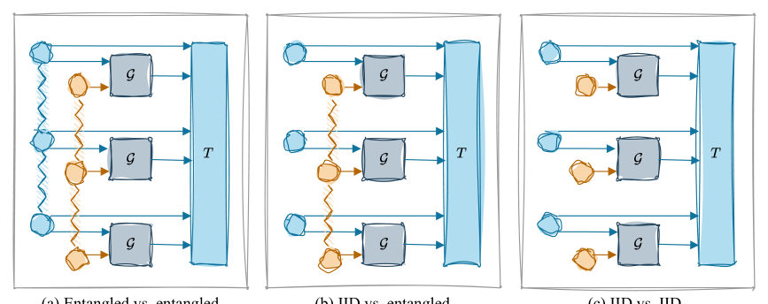
<figcaption class="paper-figure-caption"><b>Fig 3.</b> Figure 3: Three input structures for n parallel channel uses. The tester’s systems are shown in blue and the jammer’s systems in orange. In (a), both players may prepare entangled inputs. In (b), the tester is restricted to IID inputs, whereas the jammer may still prepare entangled inputs. In (c), both players are restricted to IID inputs. All tests are performed on the tester’s systems and can be entangled.</figcaption>
</figure>
<figure class="paper-figure-card">

<figcaption class="paper-figure-caption"><b>Fig 4.</b> Figure 4: Summary of the main results. At finite blocklength, the twelve game models reduce to nine hypothesis-testing divergences (Definition 12). Asymptotically, they reduce to five Umegaki relative entropy rates (Definition 14). Solid and dashed connectors indicate strong- and weak-converse results, respectively. For a replacer alternative, all Stein exponents reduce to the same single-letter value.</figcaption>
</figure>
</div>

<p><strong>Summary.</strong> This work develops a comprehensive minimax game-theoretic framework to analyze quantum channel discrimination, treating the problem as a game between a tester and a jammer. By combining input structures and information patterns, the authors derive exact characterizations and asymptotic exponents for twelve distinct models. This advances the understanding of fundamental limits in quantum hypothesis testing and resolves several open problems in the field.</p>
<p><strong>Why it may be interesting.</strong> The rigorous game-theoretic modeling of adversarial quantum tasks, especially the derivation of strong converse bounds, provides powerful tools applicable to understanding the fundamental limits of quantum communication and verification protocols.</p>
<details>
<summary>Detailed structure</summary>
<p><strong>Main problem.</strong> The paper addresses quantum channel discrimination, which is a fundamental task for verifying quantum dynamics, by developing a comprehensive game-theoretic framework.</p>
<p><strong>Main result.</strong> It characterizes the asymptotic Stein exponents for twelve distinct minimax game models, establishing strong converse properties for several previously open problems in composite hypothesis testing.</p>
<p><strong>Method.</strong> The authors employ a minimax game-theoretic approach, combining input structures (entangled vs. IID) with information patterns (visibility and hypothesis awareness) to derive exact finite blocklength characterizations using minimax hypothesis testing divergences.</p>
<p><strong>Model / system.</strong> The system involves distinguishing between candidate quantum channels ($\mathcal{G}$) using inputs controlled by both a tester and a jammer in a game-theoretic setting.</p>
<p><strong>Key observables.</strong> Asymptotic Stein exponents, minimax hypothesis testing divergences, and error probabilities ($\alpha_T, eta_T$).</p>
<p><strong>Important parameters / regimes.</strong> Blocklength ($n$), error tolerance ($\epsilon$), and the structure of the inputs (entangled vs. IID).</p>
<p><strong>Assumptions / limitations.</strong> The framework analyzes twelve specific game models derived from combinations of input structures and information patterns; some results rely on specific assumptions regarding the jammer's input preparation.</p>
<p><strong>Figures summary.</strong> Figure 1 illustrates the three input configurations (Tester, Jammer, Minimax). Figure 2 details the four information patterns based on jammer visibility and hypothesis awareness. Table 1 summarizes the twelve resulting Stein exponents.</p>
<p><strong>Paper structure.</strong> The paper first establishes the general minimax game-theoretic framework for channel discrimination. It then analyzes the resulting twelve models, deriving exact characterizations and asymptotic exponents. Finally, it develops general arguments to upgrade achievability to strong converse results, resolving specific open problems.</p>
</details>
<details>
<summary>Abstract</summary>
<p>Quantum channel discrimination is a primitive task for identifying, verifying, and benchmarking quantum dynamics. Previous studies have primarily considered either the best-case tester-input setting or the worst-case jammer-input setting. Here, we introduce a game-theoretic framework in which both the tester and jammer control separate inputs. Combining three input structures, characterized by whether the tester and jammer use entangled inputs or IID inputs across channel uses, with four information patterns, determined by the visibility of the jammer's strategy and its knowledge of the true hypothesis, yields twelve game models. We provide exact finite blocklength hypothesis testing characterizations of all twelve models in terms of nine minimax hypothesis testing divergences and derive their asymptotic Stein exponents. Notably, for entangled jammers, neither the visibility of the jammer's strategy nor its knowledge of the true hypothesis affects the asymptotic Stein exponent, whereas the information pattern remains consequential for IID jammers. As an example, we study the discrimination of a general channel from a replacer channel and show that all asymptotic Stein exponents coincide with the same additive, single letter quantity. We further develop a general argument that upgrades achievability results to strong converse results, thereby establishing strong converse properties for several game models, resolving an open problem in composite hypothesis testing posed by Berta et al. [Commun. Math. Phys. 385, 55 (2021)], and strengthening several recent results of Lami [arXiv:2510.06340]. The framework and techniques developed here may support future studies of quantum information tasks involving competing roles.</p>
</details>
<p><sub><a href="#top">↑ back to top</a></sub></p>

<p><a id="paper-2609.09280"></a></p>
<h3 id="multipole-splats-for-optimized-and-inverted-effective-potentials"><a href="http://arxiv.org/abs/2609.09280v1">Multipole splats for optimized and inverted effective potentials</a></h3>
<p><strong>Authors:</strong> Matija Medvidović, Angel Rubio, Juan Carrasquilla<br>
<strong>Type:</strong> theory · <strong>Category:</strong> strongly correlated electrons · <strong>PDF:</strong> <a href="https://arxiv.org/pdf/2609.09280v1">https://arxiv.org/pdf/2609.09280v1</a><br>
<strong>Analysis basis:</strong> full PDF text, analyzed in chunks
<strong>Topic relevance:</strong> <code>Keldysh / 2PI / non-Gaussian methods</code> <strong>1/5</strong></p>
<div class="figure-strip-hint">↔ Scroll figures horizontally</div>
<div class="paper-figures-scroll">
<figure class="paper-figure-card">

<figcaption class="paper-figure-caption"><b>Fig 1.</b> FIG. 1. A schematic of the variational potential optimization enabled by multipole splat potentials. We use floating Gaussian monopoles and dipoles to exactly control the asymptotic decay and generate the optimized effective potential as an electrostatic potential of a fictitious charge distribution. Both optimized effective potentials and inverted exact Kohn-Sham potentials can then be recovered by direct optimization.</figcaption>
</figure>
<figure class="paper-figure-card">

<figcaption class="paper-figure-caption"><b>Fig 2.</b> FIG. 2. Left: The OEP and IKS potentials and their XC source densities for the silicon monoxide (SiO) molecule using the EXX, B3LYP and PBE0 functionals as well as the IKS with respect to the independently computed CCSD(T) reference density. The orbitals were represented using the aug-cc-pVQZ (quadruple-zeta) basis. In the bottom panel, we show the density TV contributions along the axis of the molecule, demonstrating density matching between OEP (IKS) and GKS (CCSD(T)). Center: Similar to the left panel, computed on the carbon monoxide (CO) molecule. Right: The radial dependence and the asymptotic decay of neon (Ne) atom effective potentials. We observe the expected asymptotic decay from...</figcaption>
</figure>
<figure class="paper-figure-card">

<figcaption class="paper-figure-caption"><b>Fig 3.</b> FIG. 3. Effective correlation potentials vc = vxc −vEXX, defined in Eq. 34, plotted along the molecular axis for H+ 2 (left), HeH+ (center), and H2 (right). Internuclear separation increases downward and is labeled in each panel. Hybrid OEP results (B3LYP, PBE0) are contrasted with the inverted (INV) potential obtained from a CCSD(T) reference density, serving as a high-level finite-basis reference. Dashed lines mark the (1−γ)/r asymptote inherited from the missing fraction of exact exchange. For H+ 2 , the exact vc vanishes identically. Vertical scales are independent across panels.</figcaption>
</figure>
<figure class="paper-figure-card">

<figcaption class="paper-figure-caption"><b>Fig 4.</b> FIG. 4. Left: Neon atom Rydberg ns (l = 0) and nd (l = 2) series εn, plotted against 1/2n2. Reference experimental values and quantum-defect fits ˆµs ≈1.351 and ˆµd ≈0.006 from Eq. 35 are highlighted. OEP eigenvalues and their GKS or HF counterparts are plotted as well. Center: Converged OEP potentials on a logarithmic radial scale, sharing the energy axis with the left panel. Horizontal lines mark the ns and nd eigenvalues, with classical turning points marked. Upper right: HOMO eigenvalues against CCSD(T) ionization potentials IP for the selected 60 GW100 systems with N ≤40 electrons. Mean absolute errors |εHOMO +IP | for EXX (≈17 mHa) and HF (≈27 mHa) are shown, averaged over these...</figcaption>
</figure>
<figure class="paper-figure-card">

<figcaption class="paper-figure-caption"><b>Fig 5.</b> FIG. 5. Exact exchange OEP results for benzene (top) and naphthalene (bottom), evaluated on a plane 1 Bohr above the molecular plane. Left: The exchange source density, read directly off the converged multipole splat parameters, resolv- ing the delocalized π system of benzene and the inequivalent bonding regions of naphthalene. Right: The pointwise den- sity variation |n −n0| against the GKS reference n0.</figcaption>
</figure>
</div>

<p><strong>Summary.</strong> This paper introduces 'multipole splats,' a novel potential ansatz, to overcome the numerical instability inherent in calculating optimized and inverted effective potentials in DFT. By reformulating the OEP and IKS problems as stable nonlinear optimizations, the authors provide a robust tool to diagnose systematic errors like self-interaction error and achieve accurate spectral predictions for complex quantum systems.</p>
<p><strong>Why it may be interesting.</strong> The development of robust, numerically stable methods for calculating effective potentials is crucial for accurately modeling long-range correlation effects and real-time dynamics in quantum systems, which is highly relevant for AMO physics.</p>
<details>
<summary>Detailed structure</summary>
<p><strong>Main problem.</strong> Modern DFT methods using hybrid functionals introduce nonlocal and orbital-dependent potentials that cause systematic errors in response properties and real-time dynamics.</p>
<p><strong>Main result.</strong> The introduction of 'multipole splats' allows OEP and IKS potentials to be formulated as stable, differentiable nonlinear optimization problems, yielding improved diagnostics for correlation errors and accurate spectral properties.</p>
<p><strong>Method.</strong> The authors recast the OEP and IKS problems as stable nonlinear optimization tasks by using a novel trial potential ansatz (multipole splats) that ensures correct asymptotic decay, bypassing numerical fragility.</p>
<p><strong>Model / system.</strong> The work focuses on electronic structure calculations within the Kohn-Sham DFT framework, particularly addressing the challenges posed by orbital-dependent exchange-correlation (XC) functionals in molecular and condensed matter systems.</p>
<p><strong>Key observables.</strong> Effective potentials ($v_{xc}$), self-interaction error (SIE) signatures, delocalization errors, static correlation errors, and the Rydberg series eigenvalues.</p>
<p><strong>Important parameters / regimes.</strong> The number of monopoles and dipoles in the splat ansatz, the regularization strength ($\lambda$), and the choice of basis set (e.g., $    ext{aug-cc-pVQZ}$).</p>
<p><strong>Assumptions / limitations.</strong> The method assumes that the OEP and IKS problems can be mapped onto stable, differentiable optimization formulations using the multipole splat ansatz.</p>
<p><strong>Figures summary.</strong> Figures compare converged $v_{xc}$ potentials (EXX vs. IKS vs. hybrid) showing the correct $-1/r$ tail, and illustrate hyperparameter stability across various molecular systems.</p>
<p><strong>Paper structure.</strong> The paper first establishes the theoretical limitations of current DFT potentials, then introduces multipole splats as a stable optimization framework for OEP/IKS, and finally demonstrates its application by analyzing error signatures and calculating accurate Rydberg series.</p>
</details>
<details>
<summary>Abstract</summary>
<p>Approximate single-particle descriptions of correlated matter remain the principal source of actionable predictions in quantum science. In modern density functional theory (DFT), hybrid effective Hamiltonians are constructed to reproduce equilibrium densities and forces. However, their nonlocal and orbital-dependent potentials leave systematic errors in response properties and real-time dynamics. Local optimized effective potentials (OEP) or inverted Kohn-Sham (IKS) potentials would remove this limitation, but the numerical fragility in finite orbital bases has long prevented their wide adoption. We introduce multipole splats, a class of trial potentials that carry the correct asymptotic decay by construction. By showing that OEP and IKS map to variational and supervised variants of Hamiltonian learning, we recast both problems as stable nonlinear optimization formulated directly in standard orbital basis sets and applicable to any hybrid functional approximation. We show improvements to three canonical DFT failure modes. Firstly, by comparing approximate and near-exact inverted effective correlation potentials, we isolate the spatial signatures of self-interaction, delocalization, and static correlation errors. Secondly, we recover the Rydberg series without empirical asymptotic corrections, demonstrating access to precise spectral properties. Finally, we compute exact-exchange potentials for larger $π$-conjugated systems, establishing scaling capacity. Multipole splats extract new first-principles insights from established approximations and provide capacity for robust dataset generation for downstream processing and learning.</p>
</details>
<p><sub><a href="#top">↑ back to top</a></sub></p>

<p><a id="paper-2609.10424"></a></p>
<h3 id="noncommutative-sharp-hausdorff-young-inequality"><a href="http://arxiv.org/abs/2609.10424v1">Noncommutative sharp Hausdorff-Young inequality</a></h3>
<p><strong>Authors:</strong> Hongsen Qiu, Xiao Xiong<br>
<strong>Type:</strong> theory · <strong>Category:</strong> other · <strong>PDF:</strong> <a href="https://arxiv.org/pdf/2609.10424v1">https://arxiv.org/pdf/2609.10424v1</a><br>
<strong>Analysis basis:</strong> full PDF text, analyzed in chunks
<strong>Topic relevance:</strong> <code>analog quantum simulation</code> <strong>1/5</strong></p>
<div class="figure-strip-hint">↔ Scroll figures horizontally</div>
<div class="paper-figures-scroll">
<figure class="paper-figure-card">

<figcaption class="paper-figure-caption"><b>Fig 1.</b> Low-resolution page preview, page 2</figcaption>
</figure>
<figure class="paper-figure-card">
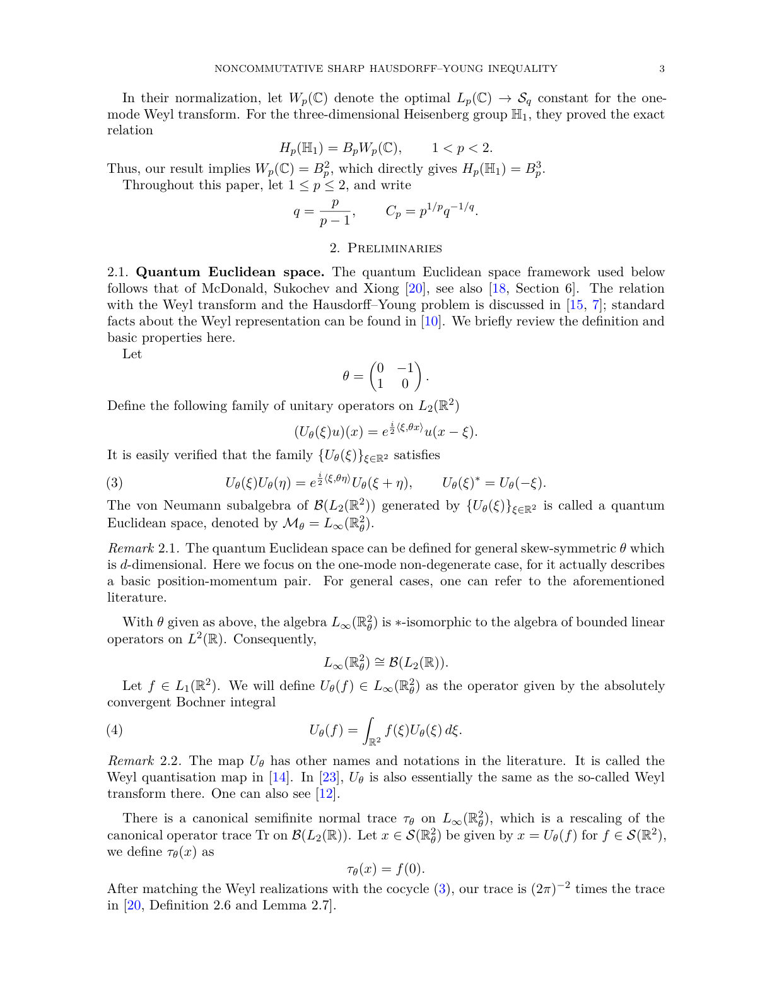
<figcaption class="paper-figure-caption"><b>Fig 2.</b> Low-resolution page preview, page 3</figcaption>
</figure>
<figure class="paper-figure-card">

<figcaption class="paper-figure-caption"><b>Fig 3.</b> Low-resolution page preview, page 4</figcaption>
</figure>
<figure class="paper-figure-card">
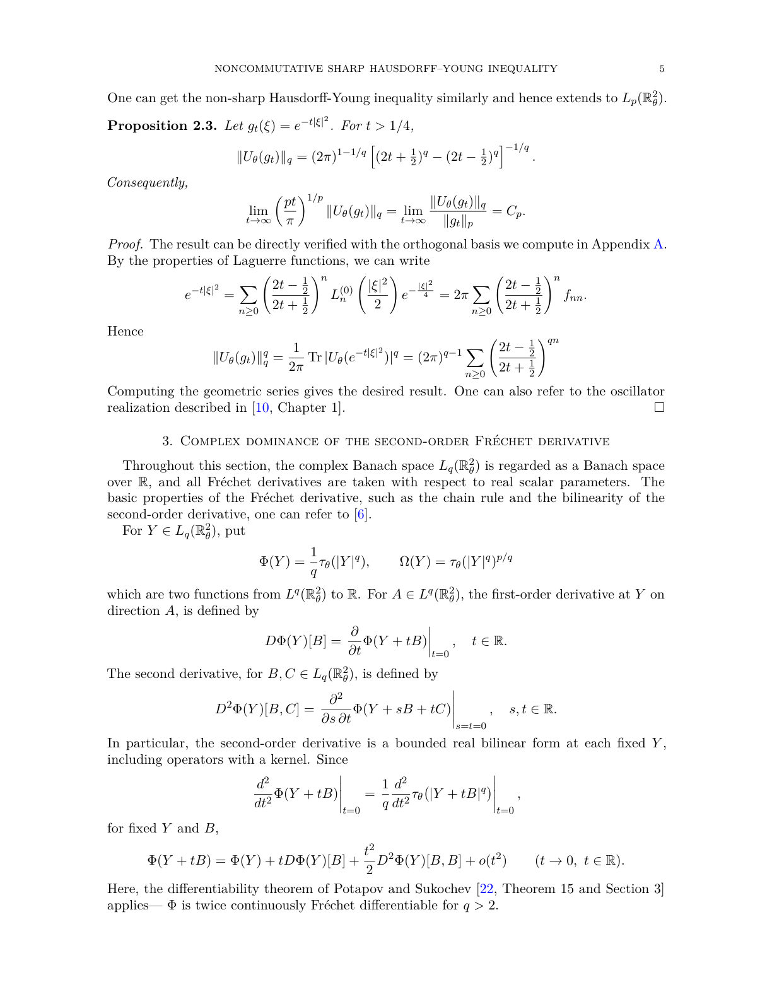
<figcaption class="paper-figure-caption"><b>Fig 4.</b> Low-resolution page preview, page 5</figcaption>
</figure>
<figure class="paper-figure-card">
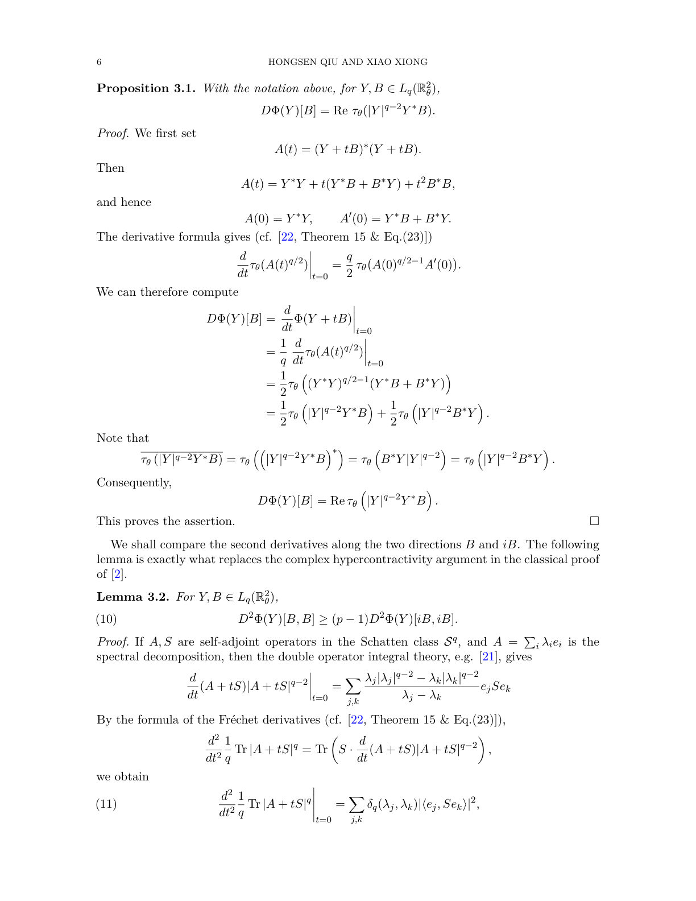
<figcaption class="paper-figure-caption"><b>Fig 5.</b> Low-resolution page preview, page 6</figcaption>
</figure>
</div>

<p><strong>Summary.</strong> This paper proves the sharp Hausdorff-Young inequality on the quantum Euclidean space using advanced operator calculus techniques involving a Gabor transform-related flow. The result establishes sharp bounds for the Weyl transform and extends these findings to derive the sharp Young's Convolution Inequality in the noncommutative setting.</p>
<p><strong>Why it may be interesting.</strong> While the core topic is harmonic analysis, the use of operator calculus on quantum spaces and the generalization of classical inequalities to noncommutative settings is highly relevant to quantum probability and quantum information theory.</p>
<details>
<summary>Detailed structure</summary>
<p><strong>Main problem.</strong> The paper aims to prove the sharp Hausdorff-Young inequality in a noncommutative setting, extending classical harmonic analysis results to quantum spaces.</p>
<p><strong>Main result.</strong> The sharp Hausdorff-Young inequality, $\lVert U_	heta(f) 
Vert_{L^q(\mathbb{R}^2_	heta)} \le C_p \lVert f 
Vert_{L^p(\mathbb{R}^2)}$, is established, which also yields sharp constants for the Weyl transform and the Heisenberg group.</p>
<p><strong>Method.</strong> The proof heavily relies on operator calculus, utilizing a novel operator-valued flow related to the Gabor transform and analyzing the monotonicity of associated functions via Fréchet differentiation.</p>
<p><strong>Model / system.</strong> The analysis is conducted on the quantum Euclidean space, modeled by the von Neumann subalgebra $M_	heta = L^\infty(\mathbb{R}^2_	heta)$, which is related to the Weyl transform and noncommutative $L^p$ norms.</p>
<p><strong>Key observables.</strong> The norms $\lVert U_	heta(f) 
Vert_{L^q(\mathbb{R}^2_	heta)}$ and $\lVert f 
Vert_{L^p(\mathbb{R}^2)}$, and the associated constants $C_p$.</p>
<p><strong>Important parameters / regimes.</strong> The conjugate exponents $p$ and $q$ ($1/p + 1/q = 1$), and the deformation parameter $  heta$.</p>
<p><strong>Assumptions / limitations.</strong> The method assumes the applicability of operator calculus and requires $q>2$ for certain differentiability theorems to hold.</p>
<p><strong>Paper structure.</strong> The paper develops the proof by first establishing the monotonicity of a function $L_A(f)$ using heat flow arguments, leading to the sharp inequality (Theorem 4.4). It then generalizes this to prove the sharp Young's Convolution Inequality (Theorem 5.3) by relating convolution to pointwise multiplication in the appropriate function space.</p>
</details>
<details>
<summary>Abstract</summary>
<p>We prove the sharp Hausdorff--Young inequality on the quantum Euclidean space. Meanwhile, our result implies the sharp Hausdorff-Young constants for the Weyl transform, as well as that for the Heisenberg group. The key ingredient is a novel operator-valued flow related to the Gabor transform. Our method is mainly based on operator calculus and hence generally applicable to similar problems. Finally, we give the definition of noncommutative convolution and include the partial results for the sharp Young's inequality.</p>
</details>
<p><sub><a href="#top">↑ back to top</a></sub></p>
<hr>
<p>
<a href="index.html">← Index</a>
 · <a href="papers_04.html">← Previous</a> · <a href="papers_06.html">Next →</a>
</p>
<hr>

</body>
</html>
